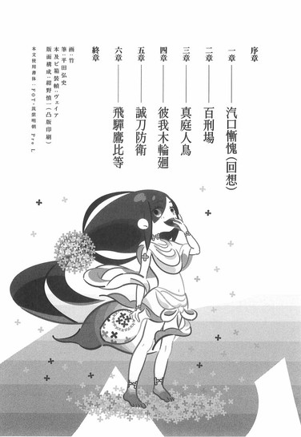
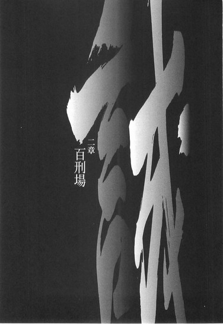
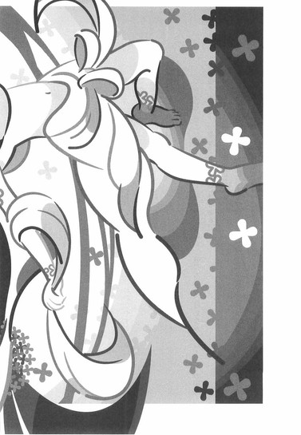

| [西尾維新] 刀語10 | |
| 西尾維新 | |
| (2015) | |
|
刀語 第十話 誠刀・銓
西尾維新
|
底本データ
一頁16行 一行42文字 段組１段
「ツルギ」、以後「ツルギ」に置換え注略。
「とがめはそもそも、幸せなんて求めちゃいないよ」
虚刀流・鑢七花と奇策士・とがめが
蒐集する変体刀は、いよいよ十本目。
対象は誠刀『銓』、所在は陸奥の百刑場。
そこは、先の大乱を導いたとがめの
父・飛騨鷹比等が、七花の父・鑢六枝に
惨殺されたという呪われた土地だった。
今は何もない原っぱ──百刑場に突如
出現した〝仙人〟は、とがめの心をかき
乱し、七花に〝意識〟の戦いを強いる！
刀語、第十話の対戦相手は、
変幻自在の彼我木輪廻！

序章
■ ■
「──■■■」
燃えている。
燃えている。燃えている。
燃えている。燃えている。燃えている。
赤々と──燃えている。
めらめらと──燃えている。
すべてが燃えている。
すべてが燃えていく。
燃え盛り──燃え尽きていく。
「■■■──よく聞くんだ」
火が。
炎が。
それ自体が確固たる独自の意志を持っているかのごとく、広がって、増殖して、全てを包み込む──さながら火炎の結界を張るかのごとく。
わたし達を。
まるで何かから守るかのように。
「■■■」
熱気で息をするのも難しい中──
あなたはわたしに語りかけた。
わたしの名を。
もう忘れてしまったわたしの名を──呼んだ。
「どうやら僕は失敗してしまったようだよ──最早この状況は決定的だ。ここから覆せる策を、僕はもう持ち合わせていない」
そんな諦めたようなことを言う。
否。
達う──あなたは最初から諦めていたんだ。
わたしにはあなたの言っていることが少しもわからないけれど──でも、それについてだけは確実に言える。
あなたは最初からわかっていたはずだ。
自分の企てが失敗に終わることを。
自分の企みが失敗に終わることを。
こうなることを。
わかっていて──知っていたはずだ。
わたしはそれを忘れているけれど──
あなたは確実に、諦めていた。
最初から成功するつもりはなかった──だからこそあなたの行為はたちが悪い。
なぜなら──あなたは成功するつもりはなくとも、失敗するつもりはあったからだ──そう。
覆すも覆さないもない。
今のこの状況は。
周囲を完全に炎に包まれたこの状況は──むせ返るような熱気で前すら見えないようなこの状況は、つまるところあなたの思った通りなのだ。
当初の計画通りなのだ。
あなたは自分の計画が失敗することを確認したかっただけなのだ──万全を期し、周到に準備をし、それでも自分が失敗することを、ただただひたすらに確認したかっただけなのだ。
だからそんな──納得したような顔をしている。
何一つ思い残すことがないような、そんな顔をしている。
「ふうん。そうか、僕はこういう風に失敗するのか──なるほどね。なかなか面白い趣向だったよ、本当に──」
あなたは、そんなことを言う。
そうだ。
失敗することはわかっていても──あなたは自分がどういう風に失敗するかまではわかっていなかった。
歴史が歴史をどう修正するのか。
歴史があなたをどう粛清するのか。
そこまではあなたの計画の外だった。
負けかた試し。
あなたにとってこのいくさが持つ意味合いは──敵味方あわせて幾千幾万の死者を出したこのいくさが持つ意味合いは──言ってしまえばただそれだけのことだった。
「この歴史は間違っている」
あなたは。
いつか聞いた──けれどもわたしが忘れている言葉を繰り返した。
「その間違いは、十分に示せただろう──ここでひとまず、僕の役割は終わりだ。やれやれ、実に面倒な仕事だったよ──二度とやりたくないな。大体、僕にはこういうの、向いていないんだよね──僕はさあ、家族みんなで旅行に行くような、そんな生活だけを望んでいたつもりだったんだけどね。まったく、何の因果でこんな目にあっちゃったんだか──でもまあ」
あなたは言う。
「こうやって、最後に■■■に伝えるべきことを伝えられたんだから、それでよしとしよう」
伝えるべきこと？
何を言っている。
わたしは──まだ、あなたから何も伝えられていない。
何も伝わっていない。
あなたとは──まるで切り離されている。
一体。
あなたはあなたから、何を学べと言うのだ。
「おっと──」
ふいに、あなたは炎の外側へと目を遣る。
その表情は──むしろ笑っていた。
呆れたように、笑っていた。
「──やれやれ、どうせこのまま放って置いても僕は焼け死ぬというのに、どうにも律儀な奴がひとり、いるみたいだね。困ったもんだ。最後に会話をする相手は■■■であって欲しかったけれど──そうもいかないか。ったく、歴史って奴も随分と意地悪なことをする──まあいいか」
そしてあなたはわたしに向き直る。
「きみはこのまま──ここに隠れていなさい。絶対に出てきたら駄目だよ。もしも歴史が僕の思っている通りなら──この失敗から得た教訓が真実であるならば、きみは、きみだけは死にはしないはずだ。きみはこの過酷な歴史に生き残ることになる」
歴史はきみを排除しないはずだ。
今のところはね。
あなたは──そんな意味のわからないことを言った。
「多分、武士道って奴に従うなら、僕はここで■■■を殺してあげなきゃならないんだろうけど......それが情けってもんなんだろうけれど──いくらそれが歴史の間違いを正すために必要なことであっても、それだけはできない。みんな死んじゃったけど、それでもきみを殺すことだけはできないよ」
あなたは続けた。
わたしが忘れている言葉を。
「自分の娘は──殺せない」
あなたは、続けた。
そしてあなたは、わたしをどこか、狭いところに押し込めた──幼かったわたしには抵抗するすべもなかった。
そのときわたしはどうしていただろうか？
泣いていた？
泣き喚いていた？
怒っていた？
怒鳴っていた？
わからない。
思い出せない。
思い出せるのは──わたしがあなたに押し込められ、閉じ込められた直後に、火炎の結界を破って現れた──ひとりの男のことだけだ。
その男は剣士で。
しかし刀を持っていなかった。
無刀の剣士──だった。
「やあ、やっぱり僕を殺しにきたのはきみだったかい、六枝くん」
あなたは──そんなとぼけたことを言った。
無刀の剣士は、わたしのほうへは目もくれずに、あなたに対して、
「■■■■■■■■■■■■■■■■■■■■■■■■■■■■■■■■■■」
と、言った。
何と言ったのかわからない。
憶えていない。
思い出したくもない。
だって、その無刀の剣士は──
その無刀の剣士は、あなたを殺したのだから。
これから、あなたを殺すのだから。
なのにどうして──あなたはそんな風に。
笑っているのだ。
「あっはっは」
そんな風に──笑うのだ。
「いやいや、実に面白いものだね、六枝くん──この状況。僕はきみに殺されるしかないし、きみは僕を殺すしかないというこの状況。僕にはきみの剣術に対する策がひとつもないし、それに引き換えきみは、僕を殺すための手段を千は備えているだろう──同じ人間同士で、果たしてここまでの格差ができるものなのかな？」
「■■■■■■■■■■■■」
「いや、誤解しないでくれよ──僕は決して嘆いているわけではないし、投げ出しているわけでもないんだ。ただ、滑稽でね。こんな追い詰められた状況でも、まるで危機感を感じない僕自身が、僕は面白くってたまらない──それに」
ここまで決定的に間違った歴史が。
僕は面白くてたまらないんだ──と、そう言った。
あなたは、そう言った。
「■■■■■■■■■■■■■■■■■■」
「違うね。きみは誰より歴史に縛られているよ、六枝くん──きみというよりは、虚刀流というきみの流派が縛られているのかな？まあきみが愚か者なのはきみの勝手だけれど、できることならそのばかげた愚かさを後の歴史へと引き継ぐことのないようにするんだね──たとえば、きみの娘やきみの息子に、そんな十字架を背負わせてはならないよ」
「■■■？」
「ああ、わからないかい──まあいいさ。きみと分かり合おうとは思わない。だが僕はきみのような人間は決して嫌いじゃないんだよ。そんなきみとこうして敵対することになってしまったのは返す返すも残念なことだ。きみが僕の味方になってくれていたなら、きっと歴史は正されただろうに──まあ、それもまあいいさ、だ。今となってはせん無きことだ」
そしてあなたは。
その場に座り込んだ。
無刀の剣士に背を向けて──わたしのほうを向いて。
いつものように不敵な表情で。
歴史を、この間違った歴史を笑い飛ばすような、そんないつもの物腰で──わたしを見ていた。
「■■■──■■■■！」
そんなあなたの首に──刀がきらめく。
無刀の剣士の。
存在しない刀が──振るわれる。
無抵抗のあなたの首を、刈ろうときらめく。
「■■■！」
そしてあなたは──最後に叫んだ。
「僕はこれで途中退場だ──けれどこれだけは言っておく！僕の言うことが何ひとつ伝わっていなかったとしても、僕のことを何一つ憶えていなかったとしても──けれどこれだけは忘れないでくれ！」
わたしは。
わたしはそれを──忘れている。
「僕はきみのことが、■■■■■■！」
大事なことなのに。
忘れてしまった。
髪の色と一緒に──忘れてしまった。
■ ■
──佳境を過ぎて佳境に至る刀集め。
奇策士とがめは知られざる故郷、陸奥へと帰り着く。
伝説の刀鍛冶、四季崎記紀の作りし完成形変体刀も残るところあと三本──終わりが近付けば近付くほどに予断を許さぬ余談なき冒険譚！
そんな感じでこの物語も残すところあと三話！
奇策士とがめ！ 否定姫！ 真庭忍軍！
三つ巴の戦いは、いよいよ終局を迎える──のかもしれない！
対戦格刀剣花絵巻！
死体解体時代劇、怖っ!?
刀語の第十巻♪
一章 汽口慚愧（回想）
■ ■
別にもったいぶるわけではないが、今回は冒頭からいきなり場面回想に入る──とは言え、そこまで深く時間を遡りはしない。
ほんの一ヵ月前。
尾張幕府家鳴将軍家直轄預奉所軍所総監督・奇策士とがめと、虚刀流七代目当主・鑢七花が、四季崎記紀の作りし完成形変体刀十二本のうちの一本、王刀『鋸』蒐集のために訪れた、出羽は天童、棋士にとっての聖地である将棋村から出立する直前の話である。
絶刀『鉋』。斬刀『鈍』。千刀『ツルギ』。薄刀『針』。賊刀『鎧』。双刀『鎚』。悪刀『鐚』。微刀『釵』。
それまでふたりが蒐集した八本の完成形変体刀の元所有者の誰にも似ていなかった、変体刀の所有者としてはまず異端だった、王刀『鋸』の所有者、心王一鞘流十二代目当主汽口慚愧。
張り詰めた糸のような女。
日本刀でありながら木刀。
木刀でありながら真剣。
四季崎記紀の作りし刀の中で唯一、毒を発さない──むしろ毒を吸い取る、解毒効果のある変体刀、王刀『鋸』の所有者。
ひとりで道場を守っていた彼女から──その王刀『鋸』を受け取った、その翌日のことである。
鑢七花はひとりで、心王一鞘流の道場を訪ねたのだった。
とがめは、王刀『鋸』の梱包と、それから王刀『鋸』を蒐集する際の顛末を報告書として仕上げる作業のために、宿泊していた旅籠に残っていた──と言うより、とがめがそれらの作業に集中してしまい、手持ち無沙汰になった七花が、暇潰しになんとなく心王一鞘流の道場を訪ねたと言ったほうが正しいかもしれない。
梱包はともかく、報告書のほうには時間がかかりそうだったので、待っていられなかったのだ。
まあ、この刀集めの旅は尾張幕府内において、今や結構な注目を集めているとのことだったから、とがめの気合の入りようも無理はない──と、七花はそんな風に思っていた。
無論、それだけではない。
幕府内の政敵──奇策士とがめの天敵、尾張幕府家鳴将軍家直轄内部監察所総監督・否定姫もまた、その報告書を読むことになるのだから、上役に提出するための報告書と言っても、あった顛末をそのまま書き記すわけにはいかないのだ。
虚実織り交ぜた報告書にする必要がある。
だから──どうしても時間はかかってしまう。
その手の政治的な小難しい話は七花のもっとも苦手とするところだったので、同じ部屋にいるだけでも正直、息が詰まった──そんなこんながあっての、将棋村の中心あたりに位置する、心王一鞘流の道場への訪問だった。
七花はこの道場に、門下生として十日間、通いつめた。
それだけに多少、名残を惜しみたい気持ちもあったのかもしれない──それは虚刀流の現当主の感情としては如何なものかと思われたが、ともかくとして。
「よう」
と。
七花は草鞋を脱いで、道場へと上がったのだった。
勝手知ったる他人の家である。
「おや──七花どのではありませんか」
と、汽口が返答したのは、しかし、彼女が規定の回数の素振りを終えてからのことだった──しばらくの間、汽口は七花が道場に上がっていたことに気付かなかったのだ。
恐るべき集中力である。
手にしている木刀は、当然、もう王刀『鋸』ではなかったけれど──それでも、彼女自身に変わるところはないようだった。
手ぬぐいで汗を拭きながら、汽口は七花のほうへと近付いてきて、
「どうかされましたか」
と、訊いてきた。
そう訊かれても七花は困るだけだ。
別段、用があったから道場に来たわけではない──旅籠に居づらかったから外に出ただけだし、この道場に足が向いたのも足癖のようなものなのかもしれない。
返答に詰まる七花に、汽口は、
「明日か、明後日には尾張に帰られるということでしたね──」
と、自分のほうから話題を振ってきた。
「──その際には見送らせていただくつもりでしたが、七花どのがここに来られたということは、ひょっとして予定が変更になったとか──」
「いや、そういうわけじゃなくて──まあ、なんとなくな」
言いながら、七花は汽口の持つ木刀へと手を伸ばした。そして、「ちょっとそれ、貸してくれるか」と言う。
「勿論、一向に構いませんが──」
手にした木刀を七花に渡しながら、汽口は少しだけ、戸惑いのような表情を浮かべる。
無理からぬことだろう。
既に汽口は虚刀流について知っている。
かの流派──無刀の剣術、虚刀流について知っている。
七花が、木刀に限らず、石刀、真剣、ありとあらゆる『刀剣』を使うことのできない、まさしく言葉通りの『無刀の剣士』であることを知っている──それなのに、その七花から木刀を貸してくれと言われれば、汽口でなくても戸惑うだろう。
そんな汽口の反応に構わず、七花はその木刀を構えてみる。
当然──しっくりこない。
いや、もっとありていに言えば──気持ち悪い。
心王一鞘流の門下生として過ごした十日間、七花は木刀を振るい続けたが──しかし、それでも未だに、まるで慣れていなかった。
まるで馴染んでいなかった。
木刀でこうなのだ。
これがもしも、真剣だったなら──あるいは。
四季崎記紀の作った変体刀だったなら。
完成形変体刀だったなら──どうなるのだろう。
「......七花どの？」
汽口は、心配したように言う。
「顔色がすぐれません──ご無理なさいませんように」
「あ、いや──別に刀を持っただけで体調が悪くなるってわけじゃないんだが」
言いながらも、七花は早々と木刀を汽口に返すのだった。
「しかし、あんたと戦って、改めて虚刀流という流派の不自然さを知ったって言うかさ──島にいた頃は、大して気にもしていなかったんだけど」
そこまで言って、七花は気付く。
そうだ。
おれは、昨日汽口から言われた、あの言葉が引っかかっていたから、今日、この道場に来たのだ──と。
旅籠に居づらかったからとか、名残を惜しむためだとか、足が勝手に向いたとか、そんなのはすべて言い訳だ。
七花は。
汽口のあの言葉が、気になったのだ。
「あんたさ──昨日おれに言ったこと、覚えているか？」
「......？」
汽口は小首を傾げる。
「昨日言ったこと──と言われましても」
「いや、だからその──呪いが、どうとか」
「ああ」
七花の助け舟と言うにはあまりに中途半端な助け舟に、しかし、汽口は思い出したようだった。生真面目すぎるところはあるが、基本的に彼女は聡い女なのだ。
「『まるで呪いのようですね──』と、確か、そう言いました。刀を持つよりも刀を持たない状態のほうが十全に実力を発揮できる七花どのを指して、そんな表現をしてしまいました──いや、今から思えば、とても失礼な表現でした」
お詫びいたします、と汽口は頭を下げた。
七花は慌てて、
「あ、謝る必要はないんだけど」
と言う。
どうにもうまく会話を運べない。
世間知らずで無神経、空気を読めないことこの上ない野生児であった七花だが、奇策士とがめと共に半年以上も旅を続けることにより、いい加減いくらか世間ずれし、その手の神経も発達し、ある程度は空気も読めるようになっていた。しかしそれゆえに、他人と普通に会話するというただそれだけのことに、違和感を覚えるのだった。
自分の会話運びの下手さが嫌になる。
とがめの交渉術の十分の一でも身につけばいいと、こういうときには切実に思う。
言いたいことが上手く表現できないのだ。
「むしろ、あんたの言う通りだとおれは思ってさ──そういう考え方はしたことはなかったけれど、ひょっとしてそうなのかもしれないって、思ったんだ。だから──」
虚刀流。
初代当主鑢一根から──大乱の英雄、六代目当主鑢六枝を経て、現当主の鑢七花に至るまで。
誰一人──刀剣を扱う才能を持たず。
それゆえの──無刀の剣士だった。
「──もしも、本当にそういう『呪い』があるんだったら、詳しい話を聞きたいと思って」
だから──来たのだ。
まるでとがめの眼を盗むかのように。
奇策士の忠実なる従僕である七花が、許可も取らずにひとりでこの道場を訪れたのである。
「ああ、いや、七花どの──」
対して、汽口は困ったような顔をした。
「確かにわたしは迂闊にも軽い気持ちで『呪い』という言葉を使いましたが──しかし、それは冗談の類で、現実にそんなことがあるという話は聞いたこともありません」
「なんだ。そうなのか？」
「ええ──あたら混乱させるようなことを言って申し訳ありません。わたしらしくもない発言でした──」
そう言って、再度頭を下げる汽口。
謝らせるつもりは、だから、ないのだが。
「ふうん」
まあ、そんなところだろう。
七花も別に、本気で自分の刀剣に対する才能のなさを『呪い』だなどと思ったわけではない──そもそも七花は『呪い』の存在など信じていない。
とがめだってそうだろう。
その立ち位置は違えど、現実主義者という意味では七花もとがめも同じである。
「ただなあ──錆の奴も似たようなことを言ってたから、もしかしてって思ったんだよな」
「錆？」
汽口はその名前に反応した。
殺人剣ならぬ活人剣の使い手とは言え、やはり剣士としては、反応せずにはいられない名前だったのだろう。
「錆──白兵のことですか」
「ああ。......あれ、言ってなかったっけ？ そいつもあんたと同じで、完成形変体刀の所有者だったんだけど」
「そうだったのですか──」
感心した風に、嘆息する汽口。
七花のこの説明は、しかし大いに欠けていて、錆がこの世でもっとも薄く脆く、そして美しい刀である、完成形変体刀十二本が一本、薄刀『針』を所有したのは、七花と対決するほんの半年ほど前のことであり、そういう意味では心王一鞘流当主に代々伝わる王刀『鋸』を継承していた汽口漸塊とは、まるで同じではないのだけれど──
そんな複雑なことを七花は説明できない。
自分でも言っておいて、ああこりゃ説明が足りないなあとは思いはするものの、それを訂正する手間を考えると、うんざりして追加の説明を呑み込んでしまう。
まあ、自分が錆と戦ったことだけ伝わればいいだろうと、最終的に七花は判断した。
「では、七花どのは、日本最強と名高いあの錆白兵を打倒したということなのですね──いや、これはお恥ずかしい話です。剣士でありながら、そんな大事な情報を知らなかったとは」
「九州の辺りじゃ、割りと広まってたけどな──戦った場所が周防の巌流島だっただけに、江戸からこっちにはあんまり伝わってなかったみたいだ」
と。
そんなことをとがめが言っていた。
「──時間の問題だろうけれど」
「ならばそう仰っていただければよかったのに」
「木刀を持った状態であれだけの醜態を晒したこのおれが、錆白兵を打倒したなんて言っても、あんたは多分信じなかったんじゃないのか？」
「ああ──そうかもしれません」
汽口は、更に重ねて謝りこそしなかったものの、しかし己の未熟を詫びるような表情を浮かべて、頷いたのだった。
皮肉に聞こえてしまったらしい。
会話運びが──どうにも苦手だ。
そんな風に七花もまた、汽口に対して申し訳ない気分になったが──まあこの場合、相手が真面目一辺倒、七花の性格とは対極に位置する真人間そのものの汽口慚愧なので、たとえ七花でなくとも、大抵の人間は会話運びに苦労させられることになるのだが──
「して、あの錆どのが──何と仰っていたのですか？」
「えっと......」
汽口からの質問に、七花は記憶を探る。
「記紀の血統がどうとか......、何だっけな。とにかく、虚刀流は束縛されているとか、そんな話だったんだ」
「束縛？ ですか？」
「そう。虚刀流は四季崎記紀に束縛されている──とか、彼の血から逃れることはできない──とか。それは何故なら、虚刀流は四季崎記紀の『遺品』だから、とか......正直言っておれにはわけがわからなかったし、それについてはとがめも意味不明だと言っていた──」
「七花どのだけではなく、とがめどのがそう仰ったのですか。ならば本当に意味不明の言葉だったのでしょうね──」
この言葉は何気に七花の知性を低く見積もった発言だったが、対極にありながらもふたりはお互いに天然同士だったので、突っ込みも訂正も入ることなく、そのまま会話は続いた。
ここに限っては、ある意味絶妙の会話運びなのかもしれなかった。
「あんたの言った『呪い』って言葉と、錆の言った『束縛』って言葉が、どうにもおれの中でかぶったんだけど──まあ、実際はあんまり関係ないのかもしれないな。剣士同士、言うことが一致することもあるだろうし」
「あの剣聖と並べられるほどの剣士では、わたしはありませんよ」
「謙遜するなよ──正直言って、おれは口惜しい気分が残ってるんだからな。あんたほどの剣士と、結局は全力で戦えなかったことに──」
「期待に応えられないのははなはだ遺憾ですが──しかし、これも流派の垣根です。心王一鞘流当主として、殺し合いを目的とした剣を振るうわけにはいきませんから──」
と、言って。
そこで汽口は、思案するように──黙った。
汽口が黙ると七花も喋れない。
再び汽口が口を開くのを待つしかないのだった。
「──全力で戦いたいという七花どのの期待に応えることは、勿論できませんが──しかし、七花どのが今抱いているであろう欲求不満を、ほんの少しでよいのでしたら、解消することができるかと存じますが」
「うん？」
「少々お待ちください」
汽口はそう言って、七花から返された木刀を手にしたまま、まずは壁際へと移動した。そしてその木刀を道場の床に置く。
それから汽口は、長時間に及ぶ素振り稽古によって汗にぐっしょりと濡れた道着を脱いで、その木刀の脇に畳んだ。
分厚い道着を着ているときでも細く見えた汽口の身体は、そうして見ると本当にか細かった──それなりに膨らんでいるらしい胸も、邪魔にならないよう、さらしでがっちりと固められていた。
下半身のはかまはそのままに、汽口はさらし姿で道場の中央へと移動する。
七花はそんな汽口に目のやり場をなくす──ということはなかった。彼の感性は諸肌脱ぎの若き女性を見て動じるようなところまでは、まだ成長してはいない。
ただ、汽口が何をしようとしているのか、不思議に思っているだけである。
「七花どのも、こちらへ」
汽口は言った。
「......？ 何をおっぱじめようってんだ？」
そんな風に訊きながらも、言われるがままに、汽口のそばにまで近寄る七花──しかし、ある一定の距離にまで近付いたところで、その足は自然に止まった。
汽口から発される覇気に気付いたからだ。
覇気──あるいは闘気。
そう。
まるで、昨日試合ったときのような──
「既にわかっていただけたとは思いますが──」
汽口はそう言って──構えた。
それは、拳法の構えだった。
剣法ならぬ──拳法。
「──今度は徒手空拳同士の手合わせをしようという、そういう試みです」
鑢七花は汽口慚愧と、ここまで都合三度、手合わせを行なっている──一度目と二度目は、ふたりともが木刀を持った上での手合わせ。
三度目は、七花は素手で、汽口は木刀を持っての手合わせだった。
そして今このとき──汽口は、四度目の手合わせをしようと、七花にそう申し入れたのである。
今度は──ふたりとも、素手で。
「あんた......拳法も使えるのか？」
「さあ、どうでしょう」
七花の言葉を、汽口はそんな風に受けた。
「どうぞ存分に、お試しください──と言いたいところですが、それなりの手加減はお願いします。最初に言ってしまいますと、剣を持たずに試合に臨むのは、これが初めてのこととなりますので──」
「............」
四度目の手合わせ。
とは言え、これまで審判役を務めていたとがめはこの場にいない──『始め』の合図を出してくれる者はいない。ゆえに、七花が動いたとき──それが試合開始の合図になるのだった。
汽口の意図もつかめないままに、七花は、とりあえず、言ってしまえば場の空気に流されるような形で、まずは手刀を繰り出すのだった──むろん、大いに手加減した上で、である。
威力において手加減した分、むしろ速度は通常よりも上がったくらいだったろう。
しかし胸元を狙ったその手刀を、汽口はあっさりと捌いてみせた──その上で、そのまま七花の懐にまで這入り込んで来た。
あっという間に間合いを制されたのだ。
「............っ！」
ここに来て、一気に七花の身体に緊張が走った──わけのわからないままに始まった手合わせとは言え、それに気が緩んだままの状態だったとは言え、ここまであっさりと懐に這入られたことなど、それこそ錆白兵戦以来のことだった。
思わず、自然と身体が反応する。
反射神経だけで動く。
「『虚刀流──『木蓮』、及び『野苺』！」
超近距離における対処──膝と肘を使った攻撃を、七花は汽口に対して行なった。『木蓮』、つまりは跳び膝蹴りと、『野苺』、両肘による連続打突である。面ではなく一点による攻撃、それゆえにまともに食らわすことができれば相手の皮膚や肉を容赦なく切り裂くことになる、そんな攻撃である。
手加減はした──つもりだ。
しかし、反射神経による本能的な反撃である。
手加減はしていても、力加減はできていない。
そんな膝と肘を──汽口は、両足の位置はそのままに、上半身の動きだけでかわしてみせた。器用に後ろに反って──そしてすぐに元の体勢に戻り。
そのまま七花の胸元に頭突きをする。
軽く。
しかし、空振り直後の七花には、その軽い攻撃だけで十分だった──体勢をあっさりと崩される。
足を一歩引いて、なんとか持ちこたえるも、そこに更に汽口は畳み掛けてくる──一旦身体を低く沈めてからの、真下から真上への、突き上げるような掌底──それが七花の顎をかすめた。
「くっ──」
脳がかすかに揺らされるのを感じつつ──七花はその腕を、なんとか捕らえた。
捕まえてしまえばこちらのものだ、と思う。
虚刀流は、そもそも剣術であり、ゆえに、基本的には対戦相手が剣士であることを想定しているが──しかし、相手が徒手空拳だからと言ってやることがかわるわけでもない。
拳法を相手取れないわけではない。
鑢七実が真庭蝶々を相手取ったように。
不承島という特殊な環境で育った七花には、むしろ、徒手空拳同士の戦いというのは、懐かしいくらいのものだ──七花は十九年間、常に、先代当主である鑢六枝に稽古をつけられていたのだから。
「虚刀流──『桔梗』！」
そのまま、七花は汽口の腕を捻り上げようとする──相手の肩と肘を同時に極めようという組み技である。
決まればそれで決着するはずだった。
しかし、汽口は、今度は下半身の動きでそれに対応した──七花が腕を捻り上げるよりも先に自分のほうが、身体ごとその場で回転して、七花の手を無理矢理に振り切った。
しかも、それだけに終わらない。
一回転した勢いを乗せ──そのまま、全体重を乗せて、肩から体当たりをしてきたのだ。
これはまともに食らった。
そうは言っても体格差、体重差が歴然とある、それで後ろに吹っ飛ばされるようなことはなかったが──狙ったのか偶然なのか、彼女の細い肩は七花の肺臓の部分に丁度当たって、一瞬、七花は絶息することとなった。
絶息、つまり呼吸を乱された。
だが、その呼吸を整えている暇もない。
それは七花にもわかっていた──痛いほどにわかっていた。だから、いっそ無呼吸のままで、七花は再度の反撃を試みる。
とにかく、この距離はまずい。
この間合いは──汽口の領域だ。
近過ぎて、むしろ打撃を出しづらい。
ここに来て、七花は彼女が上着を脱いではかまだけになった理由がわかった──それは単純に、動きやすさを考慮してのことだったのだ。防具をつけて木刀を振るっていたときとは、まったくと言っていいほどに速度が違う。
しかし、それがわかっても、なかなかその体感速度の差を調整できない──剣士としての汽口慚愧と、今の汽口慚愧が、七花の中で一致しようとしない。想定している速度が現実よりも低い数値だから、その差が現実以上に七花を困惑させるのだ。
だから、絶息した状態からの反撃も、あっさりとかわされてしまった。ただの苦しまぎれの反撃となり──むしろそれは、汽口に機会を与えてしまったようなものだった。
今度は真上から真下へ向けた掌底だった。
本来は脳天を狙うような攻撃なのだろうが、そこは互いの身長の関係で、それは七花の鎖骨へと向けた攻撃となった。
しかし、その歴然たる『身長の関係』があると思い込んでいた七花には、真下からならばともかく、真上からの攻撃というのはいささか想定外のものがあり、だからかわすのが精一杯で──
その先を考えることができなかった。
掌底はあくまでも前振りでしかなかったことに、気付けなかった。
「ふっ──」
汽口は、外した掌底を、そのまま道場の床にまで振り下ろして、一旦かがみ込むような姿勢を取った──そして。
片手を床についたままで、下半身を跳ね上げたのだ。
逆立ちの姿勢で下から上へ、斜めの軌道で振り上げる、流れるような蹴り技である。本来なら、それはやはり相手の首を刈るような軌道になるはずなのだろうが、そこも互いの身長の関係で七花の脇の下辺り、即ち、胴体上部を刈り取るような軌跡を描くこととなる。
完全に予想の外の攻撃だ。
そもそも逆立ちからの蹴り技というのが、七花にとっては意外過ぎた──虚刀流に似たような技がないでもないが、しかし汽口が使ってくる技としては、それはあまりにも想像の外だったのだ。
「っ、う、おお──」
その蹴り足を受け。
わざと受けたわけでもあえて受けたわけでもなく、七花はその蹴り足を胸部に受け──しかし、その威力に耐え切って。
そのまま、無理矢理にその足を振り上げた。
すくい上げるような形である。
片手で逆立ちをする姿勢だった汽口は、これにはたまらず、そのままその場で引っ繰り返るように崩れ落ちてしまった──すぐに起き上がってくるはずだと、七花は素早く距離を取って身構えたが、
「いてて」
と、汽口は。
その場に座り込んだまま、立ち上がろうとはしなかった。
「ああ、さすがですね──もう少しの間はごまかせると思ったのですが、まあ、これが限界ですか。参りました、七花どの」
「え？」
「これで四戦して一勝三敗ですね──いやはや」
感服する限りです、と、そう言いながら、汽口はゆっくりと、一拍遅れで立ち上がる。
「しかし、どうでしょう。七花どののお悩みに、何らかの風穴は開けられたのではないかと自負いたしますが？」
「......いや、よくわからねえんだけど」
七花も臨戦態勢を解いて、しかし、率直な感想を汽口に対して伝える。
「あんた──剣士であるだけじゃなく、拳士でもあったのか？すげえ軽やかな動きだったけれど──びっくりしたぜ。剣を持たずに試合に臨むのが初めてだなんて、そんなすげえ大胆な嘘をついて──」
「わたしは嘘などつきません。性格的にそういうことができないのですよ。どうにも融通がきかなくていけません」
汽口はそんなことを言う。
「ただ──こういうことです、七花どの。『一芸に秀でる者は万芸に秀でる』──わたしも未熟なりに、剣客としては一流の末席くらいには位置しているつもりです。ゆえに──戦えと言われれば、徒手空拳でもある程度の振る舞いは可能なのです」
「ある程度なんてもんじゃなかったぞ」
「まあ、そう思っていただくために、大した説明もしないままに手合わせへと持ち込みましたからね──七花どのはわたしに意表を突かれて驚いただけですよ。まさかわたしが拳法を使うとは思わなかったのでしょう？」
「まあ、そうだけど」
「そう。そしてわたしは実際は拳法を使ったわけではありません──精々、その真似事をしたまでのことです。しかし、それでもある程度の振る舞い......あの程度の振る舞いはできるわけです」
「......となると、つまり」
七花は考える。
考えて、汽口が七花に教えてくれようとしたことが何なのか、結論を出す。
「やっぱり、おれが木刀を持ったことで、あそこまで弱体化するのはおかしいってことだよな──まるで身体が剣を握ることを拒否しているかのようなものだってことだ」
「そうなりますね」
汽口は頷く。
「ですからわたしは『呪い』というような言葉を使ったし──錆どのは『束縛』などと言ったのだと思います。そもそも、剣術剣道と高らかに謳ったところで、その基本は、あくまで棒っきれを振り回すだけのこと──武器としては極めて原始的で乱暴です。洗練された武器とはとても言えないでしょう。それを持つことで戦士が弱体化するなど、普通はありえません」
「剣がなくともあんたがあそこまで戦えるように、剣を持ったほうが強くなるということはないにしたって、虚刀流と言えど、ある程度は戦えなければ理屈に合わない──ってことだな」
「刷り込み、なのかもしれませんよ？」
遠慮がちに、汽口は言った。
「つまり──虚刀流は刀剣を手にすれば弱体化すると、そんな風に思い込んでいるだけ、とか。虚刀流とはそうあるべきだと──そんな風に七花どのは育てられたわけでしょう？だから──それが身体に染み付いてしまっている、とか──」
「それはないと思うけどな──皆無じゃないんだろうけど」
しかし、あの天才の姉にしたって──
その『呪い』から無制限に解放されてはいなかったのだ。
彼女が天才ならぬ弟の七花に敗北を喫したのは、それは七実が虚刀流の人間でありながら、四季崎記紀の完成形変体刀、悪刀『鐚』を使用したことが大きな要因なのだから。
「そうですか。しかし、いずれにしても理由はあると思います。確固たる理由が──そうでなければ筋が通りません」
「ふむ」
「これは剣士としてのわたしの勘ですが──心王一鞘流が心王一鞘流であるために必要な概念がいくつかあるように、七花どのの虚刀流が虚刀流であるために必要な概念が、そこにこそあるのかもしれませんね。それはきっと、才能や、才能のなさなんて、単純には言い表せないような──そんな気がします」
心王一鞘流十二代目当主汽口慚愧は。
そんな風に、この場面を締めたのだった。
■ ■
以上、前巻に収まりきらなかった場面の回想。
この後、七花がいなくなっていることに気付き、道場まで七花を追いかけてきた奇策士とがめが、こっそりと密会していたとも取れるふたりの剣士に対して（片方は上半身はだかで片方はさらし姿）、またぞろ浮気の疑いをかけて癇癪を起こすという展開になだれ込んでいくのだが、それはいつものことなので、もう省略することにする。
二章 百刑場

■ ■
奥州の顔役、飛騨鷹比等。
彼が大名として治めていた領地は、活気という意味においては京の都や家鳴将軍家のお膝元である尾張に匹敵すると言われていた頃もあったが──しかしそれもこれも、すべては先の大乱までのことである。
先の大乱。
天下泰平の四文字を掲げて全国を支配している尾張幕府の治世の中、唯一起きたいくさらしきいくさのことを指すが──しかし最近はそう表現しても通じないことも多いのだった。
無理もない──何せ、二十年以上前の話である。
その戦争を知らない世代の人間も増えてきた。
かつてこの地が栄えていたことを知らない人間も増えてきた──彼らにとっては奥州という地は寂れに寂れ、寂れきった土地というそれだけである。
精々見るべき場所があるとすれば。
百刑場──飛騨鷹比等が住んだ飛騨城の跡地。
即ち、飛騨鷹比等が起こした反乱にかかわった者共が死刑に処された、その地のみなのだ。
■ ■
「......ちっ」
と。
その百刑場に足を踏み入れたと同時に、奇策士とがめは露骨に不快そうに顔をしかめて、舌打ちをした。
決して景色と馴染むことのない白髪。
絢爛豪華な、十二単衣のごとき着物。
雪駄を履いた格好は、それはいつも通りの旅衣装ではあったが──その表情だけは、彼女らしくもない、異様に不愉快そうなそれだった。
その隣に立つ男──上半身はだかのはかま姿、足に脚絆、手には手っ甲をつけたぼさぼさ頭の男、つまりは虚刀流七代目当主鑢七花も、鈍感ながらにそれを感じ取って何となく喋ることもできず、とがめのほうを見ることもできずに、ただ、正面を向いている。
正面──百刑場。
飛騨城跡。
要するには、いわゆる公開処刑の場なのだが──しかしそれでも長らく使われていないこともある、否、先の大乱後の数年間のみ処刑場として機能していただけの土地だ、何らかの装飾や建築物があるわけでもない。
観光地と言うにもおこがましい。
言うなればただの原っぱである。
元は処刑場だったとも、あるいは元は城が建っていたとも、まるで匂わせない──ただの広場としか思えない。
もっとも、飛騨城は最後に炎上して消し炭さえもろくに残らなかったと聞くし、処刑場と謳っていた当時から、さほど凝った処刑法を選んではいなかったらしいから、来てみれば案外こんなものなのかもしれないが。
──もうちょっと、おどろおどろしい場所を想像していたけどな。
七花はそんな風に思う。
とは言え、それを口に出すのははばかられた──勿論その理由は、七花の隣で不愉快そうに顔をしかめている、奇策士とがめである。
彼女の親族は。
そして身内と呼べる人間は。
ほとんどがこの処刑場で──斬殺されたのだから。
「............」
尾張幕府家鳴将軍家直轄預奉所軍所総監督・奇策士とがめ──本名不詳、経歴不明の彼女は、幕府の中でも相当に中枢に近い位置にいる彼女は、実のところ、奥州の顔役──反乱の立役者、飛騨鷹比等の娘である。
彼女が幕府内に身を置いているのも。
今こうして、完成形変体刀の蒐集に乗り出したのも。
全てが全て、幕府に対する復讐のためなのだ。
出世を目論むのも、家鳴将軍のそばへ上り詰めるためという、それだけなのだ。
だから──この百刑場において、彼女が平常心を失うのは仕方のないことである。彼女の復讐の理由がこの地には、かなり色濃く集約されているのだから。
──もっとも。
飛騨鷹比等本人を討ったのは七花の父親である、『大乱の英雄』こと、鑢六枝なのだから、あまりその点について突っ込んだ会話を、とがめとすることはできないのだが──
──城跡ってことは、飛騨鷹比等もこの地で落命したってことになるんだよな。
と、七花は、父親の語っていた武勇伝を思い出す。
燃え盛る城内に単身で乗り込んで、本来ならば飛騨城同様消し炭も残らなかったであろう飛騨鷹比等の首を取った──のだそうだ。
その手柄の成果が『大乱の英雄』だ。
その直後に島流しの憂き目に遭うことになる鑢六枝の、まさしく全盛期と言える。
百刑場。
この地には奇策士とがめの理由と原因。
そして、とがめと七花の因縁が──ある。
何もない原っぱでありながら。
厳然として、それらは存在している。
「......どーも、気にいらぬ」
やがて──ようやく。
奇策士とがめは口を開いた。
到着した頃にはまだ日が高かったのに、既にその日が沈もうとしている頃合だった──そんなにも長時間にわたって、彼女は不愉快そうに無言を貫いていたのだった。
それに付き合った七花も七花だが。
「四季崎記紀の作りし完成形変体刀集め──それはわたしが描いた絵図面であったはずなのに、いつの間にかあのお姫さまのいいようにされているようだ──」
「......確かに、そうだな」
七花はとがめの言葉に頷く。
「大体──微刀『釵』のときから、既に不自然ではあったよな。それに重ねるように、今回の誠刀『銓』だ。あの女──ひょっとしたら残り二本の行方も知ってるんじゃないか？毒刀『鍍』と炎刀『銃』──」
「まだこの地に誠刀『銓』があると決まったわけではないがな。しかし、尾張に戻るたびに、まるで追い返されるかのようにあのお姫さまが刀のありかを教えてくるのは納得がいかぬ──一度ならまだしも二度だぞ？」
とがめの疑問に、七花は全面的に同意せざるを得ない。実際、とがめと『お姫さま』の会話を、脇で聞いていた七花もまた、同じように思ったものだった──
「おめでとう」
と──『お姫さま』こと否定姫は、そう言ったのだ。
出羽は天童将棋村で、心王一鞘流十二代目当主汽口慚愧から王刀『鋸』を受け取ることに成功し、葉月以来二度目の帰還を果たした奇策士とがめは、しかしその葉月のときと同じように、尾張城への登城後、七花ともども、尾張幕府家鳴将軍家直轄内部監察所総監督・否定姫の住まう屋敷、否定屋敷へと呼びつけられることになった。
天敵同士としてはある意味密接な関係にあるとは言え、しかしとがめが総監督を務める軍所と否定姫が総監督を務める内部監察所は、部署としてはほとんど無関係である。従って、否定姫から呼び出されたところでそれに応じる絶対の義務があるかと言えばないのだが──だが、幕府内の情勢として、完成形変体刀のことをちらつかされれば、とがめとしては応じざるを得なかった。
ひょっとしたらそういう状況を、否定姫は故意に作り出したのかもしれない──と、後にとがめは七花に語った。
否定姫が復権してから、刀集めの旅がひと段落したところでとがめが尾張に戻ってきたときまでに──そんな根回しをしていた可能性。
そんな周到な根回しが可能なのかどうかと言えば、七花には不可能ではないかと思うのだが、天敵同士として否定姫と長い付き合いのあるとがめが言うのだから、そうなのかもしれないとも思う。
ともあれ。
否定屋敷の一室。
上座に座る否定姫。
その正面に座るとがめと七花。
葉月のあのときの、まるで再現だった。
「......お姫さま。あいつは、また天井裏にいるのか？」
ふと、そう思って、七花は訊いた。
否定姫の言った『おめでとう』というねぎらいの言葉を無視する形になったが、それはとがめが故意に無視したのだろうから、七花が拾う必要のない言葉でもあった。
大体、ねぎらいの言葉としてもわざとらしい。
「ん？ あいつって誰のこと？」
否定姫はきょとんとした仕草でそう訊き返してきた。
金髪碧眼。
しかし和装があつらえたようによく似合う。
手にしている鉄扇は、今のところ、閉じられていた。
「わたしと七花くんに、共通の知り合いなんていたかしら？」
「......いや、ほら、右衛門左衛門──さん」
左右田右衛門左衛門。
元忍者──否定姫の腹心、懐刀である。
奇策士にとっての虚刀流と同じだと、七花は認識している。
「前、あいつはいつも天井裏に潜んでいるって言ってたじゃん。だから、今もそうなのかなって思ってさ」
「ああ──いたっけ。そんな奴も」
言って、頤を上げ、天井を見上げる否定姫。
「思い出した思い出した。長い名前だからついつい忘れちゃうのよね──けど、折角あんな奴のことを気に掛けてもらってなんだけど、今はあいつ、留守にしてるのよ」
「留守？」
「実を言うとね、あいつには今、真庭鳳凰を暗殺しに行ってもらってるの」
そんなことを、否定姫はさらりと言った。
否定姫の言葉に一切の反応を示さなかった奇策士とがめも、さすがにこれには反応した。
「暗殺──だと？ 真庭鳳凰を？」
「ええ、そう」
あっさりと頷く否定姫。
「まあ、あんたと真庭忍軍は同盟を結んでるらしいけどさ──右衛門左衛門が単体で動く分には自由ってもんじゃない？」
「勝手なことを──」
とがめは不快感をあらわにする。
「──わたしにはわたしの計算があるのだ。下手な横槍を入れられると迷惑だな」
「そうかっかしないでよ──まああんたに怒られるのがやだから言っちゃうとさあ、あの根暗仮面男、真庭忍軍に個人的な恨みがあるわけなのよ」
根暗仮面男......。
酷い言い草だ、と七花は思う。
大体、左右田右衛門左衛門に仮面をつけるように強要しているのは（しかも、それは『根暗だから』というよくわからない理由である）、否定姫だというのに。
「個人的な恨み？ あの根暗仮面男が真庭忍軍にどんな恨みがあるというのだ」
とがめはそう訊いた。
否定姫の言葉に乗っかって、とがめもまた右衛門左衛門のことをそう表現したことについては何も反応せず、否定姫は、
「相生忍軍」
と言う。
「右衛門左衛門が元忍者だってことは知ってるでしょう？でも、どこの忍軍の所属だったのかってのは、あんたも知らないはず──この際だから教えちゃうと、それが相生忍軍なのよ。相生忍軍は知ってる？」
「......確か、かつて真庭忍軍と双璧を成した、異端と言えばまあ異端の忍者集団ではなかったか？旧将軍時代の末期に、真庭忍軍と本格的な衝突をして壮絶な戦いの末に潰された──と聞いておるが」
「さすが過ぎる！」
否定姫はけらけらと、愉快そうに笑った。
奇策士とがめと否定姫。
幕府にふたりの鬼女ありと称されるよう、立場は違えど似た要素の多いこの両者の一番の違いは、否定姫がこういうときに見せる、いっそ投げやりと表現してもいいような陽気さだろう、と、このとき七花は考えた。
「本当、よくそんなこと知ってるわね──相生忍軍なんて、歴史から抹殺されたも同然の忍軍なのに」
「ふん。歴史、ね」
くだらぬわ、ととがめは言った。
「つまりは左右田右衛門左衛門は相生忍軍の末裔というわけか。道理でな。そうと言われれば得心行くところも少なからずある──と言うより、あやつのわけのわからぬ生き様は、そんな経歴でも持たぬ限りは得心のしようもないな。......そして、そんな経歴につけ込んで、失われた相生忍法を、きさまは手に入れたというわけか、お姫さま」
「否定する」
鉄扇をばん、と開いて。
彼女は笑みをたたえて、そう言った。
「わたしにとっちゃ相生忍法なんてどうでもいいの一言よ──まあ、面白い要素だとは思うけれどね。わたしはただ、根暗なあいつの生き様を否定してやりたかっただけよ」
「どうだかな」
「それともこう言えば満足なのかしら？ 『勘違いしないでよね、別に右衛門左衛門が可哀想だったからなんかじゃないんだからね──ただ相生忍法が欲しかっただけなんだから』って？」
どうしてそう言えば満足になるのかは意味不明だったが、とにかくそう言って、否定姫は開いた鉄扇を閉じる。
「まあ、そういうわけでね──右衛門左衛門にとって真庭忍軍は怨敵なのよ。別にあんたの刀集めのためって言うんじゃなくて、本当にただの個人的な行動と思ってもらって結構」
「百七十年以上も前の恨みを、今更晴らそうと言うのか？」
「まあ、真庭忍軍は今弱体化してるからね──好機だとでも思ったんじゃない？」
「きさまの命令ではないと？」
「わたしの命令じゃなくもないわ」
二重否定である。
つまりは否定姫の命令だということだ。
「真庭鳳凰の暗殺──か」
とがめはその言葉を繰り返して言った。
「真庭鳳凰の暗殺。......お姫さまよ。きさまが真面目に答えてくれるとはつゆほども思わぬが、それでも一応訊かせてもらおう。そんなことが可能だと思うか？」
「どうでしょうねえ？ 実を言うと、その命令を出したのって、あんたが不要湖で微刀『釵』を蒐集した頃の話なんだけれど、あれから二ヵ月近く経つのに未だに戻ってこないところを見ると、ひょっとすると返り討ちにあったのかもしれないわねえ」
「返り討ち」
「それでも真庭忍軍十二頭領のうち、ひとりかふたりくらいはやっつけてるとは思うんだけど。......ああそうそう、これも教えてあげる。真庭忍軍十二頭領って、あんた、今、何人残ってると思ってる？」
「四人──ではないのか？」
とがめはそう言った。
それは七花も、共通認識でそう思っていた。
しかし。
「三人よ」
否定姫は言った。
「真庭鳳凰、真庭人鳥、真庭鴛鴦の三人──真庭海亀については、根暗仮面引きこもり男が既に退治しちゃってるわ」
根暗仮面に引きこもりまでついた。
酷い言われようだ。
「海亀を、な──」
「あはは、今、助かったって思ってるでしょ？忍者にして剣士っていうあの男と七花くんが戦うとなったとき、果たしてどうするべきか、あんたは考えていたはずだもんね──」
「ふん。どちらかと言えば鴛鴦のほうが厄介だとわたしは思っておったよ。しかし......そうか。残り三人か......真庭鳳凰の暗殺に成功したとしても失敗したとしても......」
ぶつぶつと、そんなことを呟く奇策士。
状況の変化に対応して、考えていた数々の策を練り直しているのだろう。
「......しかし、お姫さまよ。きさまにしてははなはだ無用心だな。あの根暗仮面引きこもり男がいないこの屋敷に、このわたしと、わたしの刀である七花を上げてしまうとは──」
とがめもまたその呼び方に便乗していた。
早く帰ってこないと右衛門左衛門の呼び名がどんどん酷いことになっていく、と七花は他人事ながら心配になった。
明日は我が身でもあるからか。
「わたしが今、きさまの暗殺を目論んだら、きさまはどうやって対応するつもりだ？」
「どうやっても何も、どうしようもないわね──でも、きっとあんたはそんなことをしないと信じているわ」
「ほう。信頼に与かり光栄だな、お姫さま」
「だってわたし達、お友達じゃない」
「............」
「そんな顔しないでよ。冗談冗談。まあ、わたしを暗殺するにしてもしないにしても、一応、わたしの話を聞いてからにしたほうがいいんじゃない？」
「きさまの話を」
「だって──あんたの大好きな完成形変体刀の話なんだから」
否定姫は皮肉を込めた口調で、そう言った。
そして否定姫は、無視された最初の言葉を繰り返すのだった。
「だから──おめでとう、と言ったのよ」
「............」
「微刀『釵』のみならず、王刀『鋸』まで蒐集した上で、この尾張に戻ってくるなんて、見事見事。これで──あんたが集めた完成形変体刀も、いよいよ九本ということなのよね」
真庭蝙蝠から絶刀『鉋』。
宇練銀閣から斬刀『鈍』。
敦賀迷彩から千刀『ツルギ』。
錆白兵から薄刀『針』。
校倉必から賊刀『鎧』。
凍空こなゆきから双刀『鎚』。
鑢七実から悪刀『鐚』。
日和号から微刀『釵』。
汽口慚愧から王刀『鋸』。
以上九本。
かの旧将軍でさえ一本も集めることのできなかった完成形変体刀を、今年に入ってからわずか九ヵ月で九本──確かに、否定姫でなくとも普通に『おめでとう』と言いたくなるような、それは成果だろう。
しかし。
否定姫が言うから──不自然なのだ。
暢気な七花でも、それはそう思う。
「あっはっは──この分じゃ、残りの三本もあっという間に集まっちゃうんじゃない？」
「たわけが。他人事だと思って勝手を言うな。そう簡単に行くわけがなかろう。残りの三本についての情報は今のところ何もない──これからはしばらく情報戦となるであろうな。しばらくは尾張に腰を落ち着けるつもりだ」
「あんた前もそんなこと言ってたけどさ──けど、そうは問屋がおろさないわけよ」
「はあ？」
「問屋って言うか、まあわたしなんだけど」
否定姫は言った。
「例によって例のごとく──わたしがまた、あんたに情報を提供してあげるから、あんたは尾張に腰を落ち着けることはできない。腰を下ろすことさえもできないわね」
「............」
「前回は不要湖の情報だったけど──そしてそれが結果的に微刀『釵』の情報になったけど、今度はそのもの、直接、完成形変体刀の話よ」
「直接......」
「誠刀『銓』の話」
自然な調子で、否定姫は続けた。
「場所は奥州の百刑場。所有者は『仙人』──彼我木輪廻よ」
──それが、つい十日ほど前の話。
結局、下ろすことができないというのは大袈裟な表現だったとしても、奇策士とがめは尾張に腰を落ち着けることがまたもできないままに、まるで折り返すかのように、奥州は百刑場──
この何もない原っぱへとやってきたのだった。
「追い返されるように、ってあんたは言ったけどさ──」
どこを眺めても原っぱは原っぱだが、しかしそれでも七花は用心のために周囲を窺いながら、とがめに対してそう問いかける。
「実際、その通りなんじゃないのか？ お姫さまにゃ、あんたが尾張にいたら都合が悪い理由があるとか、さ──」
「どうであろうな。何か企んでおるならば、確かにわたしは邪魔であろうが──しかしそうであったとしても、こうもたやすく完成形変体刀の情報をわたしに教えることは納得がいかぬ。あやつは白々しいことを言っておったが、微刀『釵』が不要湖にあることも知っておったはずだ」
「そういう話だったな。しかし、それもこれも、この原っぱに本当に誠刀『銓』があったらの話だけどなあ」
その保証はない。
この何もない殺風景な場所のどこに、誠刀があるのかと思うと、案外その情報はでまかせなのではないかという気もする。
しかし奇策士は、
「あるであろう」
と、言うのだった。
「それは間違いなくな──ここであの女がかような嘘をつく理由はない。極めて不愉快な話ではあるが、しかし、右衛門左衛門のことと言い、あの女が異様と言っていいほどにわたしの刀集めに協力的であることは確かだ」
「微刀『釵』のことと言い、誠刀『銓』のことと言い、お姫さまはお姫さまで、どこからそんな情報を手に入れているんだ？」
「あやつにはあやつの情報網があるのだよ。まあ、そのうち幾つかはわたしがかつて潰したはずなのだが──否定姫と一緒に復権したのかもしれぬな」
「けどさあ、そうは言っても」
七花は言って──もう一度、周囲を窺うようにした。
殺風景。
考えてみれば、処刑場であるこの場所に対してその形容は、いくらなんでもそのまんま過ぎる気もしたが──
「こんなところ──誰もいないじゃないか」
言った。
それはこの百刑場のことだけを指して言ったのではない──奥州に這入ってからこの地に至るまでのすべての道中を指して言っている。
誰もいないという物言いはさすがに言い過ぎだ。
しかし、その言い過ぎの表現もあながち間違っているというわけでもない。
村もまばらで──人もまばら。
とにかく活気がなく。
そして、生気もない。
まるで──土地そのものが死んでいるかのごとく。
枯れて朽ちて、死んでいるかのごとく。
「......人の故郷を無茶苦茶言ってくれるな、そなたは」
「ああいや......別に、そういうつもりはないんだけれど」
「土地を治めていた人間が全員処刑されたのだ、無理からぬよ。後任の人間も来るには来たようだが、どうにも無能だったようでな──しかし、話には聞いておったが、ここまで酷いことになっておるとは思ってはいなかったぞ。二十年振りの帰郷だが──面影さえも残っておらぬ」
確かに。
言われなければ、ここが城跡だということはわからないだろう──その痕跡さえも消されてしまっている。
天下泰平を謳う尾張幕府。
先の大乱は、ならば失態だったろう。
「......じゃあ、ある意味、この土地の寂れ具合は、幕府にとっては見せしめみたいなものなのか？あえて再開発しないことで、反乱を起こすことの愚かさを国民に示している、とか──」
「そなたにしてはなかなか考えるではないか。まあ、作戦としては三流だがな」
そう言って。
七花の意見を否定もせず肯定もせず、奇策士とがめは歩み始めた──原っぱの中。
絢爛豪華な衣装が、泥に汚れるのも構わずに。
泥。土。草。花。
以前に訪れた因幡砂漠とは違い、ここにはそういった生命を感じさせるものが多々あるというのに──どうしてこうも、土地そのものが既に死んでしまっているように感じるのだろう。
七花は考えてしまう。
壱級災害指定地域の蝦夷・踊山や江戸・不要湖のときでも、こんな感覚は覚えなかった──一度も来たはずのない土地なのに。
どうしてか、物寂しさを感じてしまう。
自分の大事なものが失われたような──否。
自分の大事なものを踏みにじられたような。
そんな気がする。
実際には何も失っておらず、ゆえに何も踏みにじられていない七花でさえそう思うのだ──今、草をかきわけるようにして先へ先へと進む、とがめの心中は想像して余りある。
想像などできるはずもない。
生まれ育ったこの地で──
変わり果てたこの地で、彼女は何を思うのか。
「まさかこんな形で故郷を訪れることになろうとは思っておらんかったがな──やれやれだ」
「......念のために訊いておくけど、お姫さまは、ここがあんたの故郷だと知った上で、あんたをここに送り込んだってことはねえよな？つまり、あんたに対する揺さぶりとして──」
「それはないであろうよ。もしもわたしが飛騨鷹比等の娘だと知っておるのであれば、わたしは問答無用で殺されておるであろう。無人島で育ったそなたにはわからぬ話であろうが、それは疑いをかけられた段階で処刑されてしまうような、そんな疑いなのだよ、七花。揺さぶりをかけるというような遠回しな真似はすまい」
「ふむ......そりゃそうか。しかし偶然にしてはでき過ぎてるような気もするな」
「今回の相手は『仙人』だからな。そういうこともあろう」
「ああ、それそれ。それだよ」
訊けなかったことだ。
尾張では否定姫とのやり取りによってとがめはずっと不機嫌だったし、奥州に来てからは奥州に来てからでこれまた不機嫌だったため、訊けなかったことだ。
ようやく、それを訊く機会を得た。
「彼我木輪廻......だっけ？ 仙人ってどういうことなんだよ。あんた、その名前について、おかしな反応してなかったか？ひょっとして、昔の知り合いとか──」
「昔の知り合いなどおらぬよ。わたしの昔の知り合いは、全員が全員、処刑されておる」
とがめは言った。
「ひとり残らず、な」
「............」
「彼我木という人間についても、わたしは何も知らぬ──反応したのは、あくまでも『輪廻』というその名前そのものについてだ。まさか今の時代に、そんなばかげた名を名乗る人間がいるとは思えなかったものでな──しかしそれが『仙人』ということなのかもしれぬ」
「遠回しだな。はっきり言えよ」
「遠回しも何も、わたしも別に事情を知っておるわけではない。今回は完全にお姫さまの情報だけが頼りなのだ──まずは足を使って、彼我木を探すところから始めねばならぬ」
「けど、不要湖じゃないけど、ここもここで人が住んでる様子はないな。彼我木はこの付近の村に住んでるってことか──しかし、最寄の村でも結構遠いぞ？ひとつひとつの村が離れてるし......それを全部、手当たり次第に当たろうってことなのか？」
「それが妥当な手ではある。しかし──もしもあのお姫さまが言っていたことが真実であるならば──、彼我木輪廻が偽りなく仙人であるならば」
と。
とがめがそう言った、まさにそのときだった。
突如。
唐突としか言いようのない感覚で──その気配は出現した。
背後に──ではない。
真正面に。
七花ととがめの正面に──彼女はいきなり現れた。
隠れる場所もない、原っぱだというのに──まるで最初からそこにいたかのように。
七花の半分ほどにも見える小さな体躯。
黒くて長い髪は後ろで束ねられている。
非常に姿勢のよい──少女だった。
「え......？」
七花は戸惑う。
「どうしてこんなところに──女の子が？」
その言葉に、少女は。
少女らしからぬ皮肉げな笑みを浮かべて──
「へえ。きみには僕がそういう風に見えるのかい？」
と言った。
そして何の脈絡もなく、こちらに名乗ってくる。
「女の子になるのは久しぶりだな──まあ堪能させてもらうさ。まあ、そういうわけで初めまして。僕は彼我木輪廻だよ──今後よろしくお見知りおきをってところかな？」
三章 真庭人鳥
■ ■
真庭忍軍十二頭領。
真庭鳥組三頭領──
『神の鳳凰』・真庭鳳凰。
使用忍法──『命結び』及び『断罪円』。
生存中。
四季崎記紀の作りし完成形変体刀十二本が一本、毒刀『鍍』の所有者。
『巻戻しの鴛鴦』・真庭鴛鴦。
使用忍法──『永劫鞭』。
現在死亡。
長月、伊豆にて、左右田右衛門左衛門との戦闘の末、討ち死に。
『逆さ喋りの白鷺』・真庭白鷲。
使用忍法──『逆鱗探し』。
現在死亡。
如月、因幡にて、宇練銀閣との戦闘の末、討ち死に。
真庭獣組三頭領──
『伝染の狂犬』・真庭狂犬。
使用忍法──『狂犬発動』。
現在死亡。
水無月、蝦夷にて、鑢七花との戦闘の末、討ち死に。
『冥途の蝙蝠』・真庭蝙蝠。
使用忍法──『手裏剣砲』及び『骨肉細工』。
現在死亡。
睦月、不承島にて、鑢七花との戦闘の末、討ち死に。
『読み調べの川獺』・真庭川獺。
使用忍法──『記録辿り』。
現在死亡。
水無月、蝦夷にて、仲間である真庭鳳凰の手にかかり、殉職。
真庭虫組三頭領──
『首狩りの蟷螂』・真庭蟷螂。
使用忍法──『爪合わせ』。
現在死亡。
卯月、不承島にて、鑢七実との戦闘の末、討ち死に。
『無重の蝶々』・真庭蝶々。
使用忍法──『足軽』。
現在死亡。
卯月、不承島にて、鑢七実との戦闘の末、討ち死に。
『棘々の蜜蜂』・真庭蜜蜂。
使用忍法──『撒菱指弾』。
現在死亡。
卯月、不承島にて、鑢七実との戦闘の末、討ち死に。
真庭魚組三頭領──
『長寿の海亀』・真庭海亀。
使用忍法──なし。
現在死亡。
葉月、信濃にて、左右田右衛門左衛門との戦闘の末、討ち死に。
『鎖縛の喰鮫』・真庭喰鮫。
使用忍法──『渦刀』。
現在死亡。
弥生、出雲にて、敦賀迷彩との戦闘の末、討ち死に。
『増殖の人鳥』・真庭人鳥。
使用忍法──『運命崩し』及び『柔球術』。
生存中。
真庭鳳凰と行動を共にする──
■ ■
「これほどに時間が経っても合流してこないところを見ると──どうやら鴛鴦もまた、落命したようだな」
真庭鳳凰は、街道を歩く速度を変えることなく、ふいにそんなことを言った。隣を歩いていた真庭人鳥は、突然そんな話を振られて、
「ひっ」
と身体を露わせた。
「お、お、おお、鴛鴦さまが──」
「問違いないだろう。これで真庭忍軍十二頭領も、いよいよたったふたりになってしまったというわけだ」
そう言う鳳凰の口調には自嘲の響きが確かにあった。
十二頭領の中でも実質的にかしらとしての役割──を務めている彼は、性格破綻者が大半を占める真庭忍軍において数少ない、社会性を持つしのびだったが──しかしそれゆえに、このあまりにもあまりな状況、あまりにもあまりな惨状に対して、思うところが決して少なくはないらしい。
それでも──真庭忍軍の長として。
情けない言葉を吐こうとはしなかったけれど。
「た、たったふたり......」
がくがくと震えっぱなしの人鳥。
鳳凰とは対照的な態度と言えた。
真庭忍軍十二頭領、否、真庭の里全体を見渡しても、実戦に参加している中ではもっとも年下の男──否、まだ少年と言っていい年頃である。
が、その若さ幼さのことを考慮しても、真庭人鳥の気の弱さは異様なほどと言えた。
本来ならば頭領どころか、しのびとしてさえ役に立たないような性格である。
しかし、彼がそれでも実戦に立ち、しかも頭領という立場を与えられているのは、彼の使用する忍法『運命崩し』が、誰の手にも負えない──実質的なかしらである真庭鳳凰の手にさえも負えない、途方もない忍法だからだ。
望むと望まざるとにかかわらず。
真庭人鳥はそういう忍法を与えられているのだ。
天から、あるいはそれ以外の何かから。
「ど、ど、どうしましょう、これからどうしましょう、鳳凰さま──」
「どうしようもない。鴛鴦ひとり欠けたところで、今更計画を変更するわけにもいくまい──このまま我らは奥州を目指す」
鳳凰は言った。
そう──今、鳳凰と人鳥は、奥州を目指しているのだ。
それも、奥州の百刑場である。
そこは今まさに、奇策士とがめと鑢七花が、誠刀『銓』を蒐集するために訪れている場所だ──当然、ただの偶然などではない。

鳳凰は奇策士とがめと、三度あいまみえんとして──その地へと向かっているのだった。
「す、既に奇策士は、四季崎記紀の完成形変体刀十二本を九本まで集めております......つ、つまり、鳳凰さまが皐月に薩摩で奇策士と同盟を結ぶ際に教えた情報の貯金を、これで使いきった形になります。ど、どうしてその後、奥州の百刑場にいるのかまではわかりませんが──た、確かに交渉するならば、今しかないでしょう......しかし、鳳凰さま」
「わかっている。それ以上言うな──」
鳳凰は首を振る。
「お前のことだ。どうせならば奇策士があと一、二本、完成形変体刀を蒐集してから交渉するべきだと言うのだろう──こちらの人数がここまで削られてしまった現状を鑑みるに、欲を言えば、奇策士が変体刀を十一本」
と。
真庭鳳凰は、自分のしのび装束の腰に差した、禍々しい色の鞘に納まった刀を──ちらりと見る。
四季崎記紀の作りし完成形変体刀。
その十二本のうち、もっとも強き毒を持つ──猛毒刀。
毒刀『鍍』。
「十一本集めたときこそが、交渉を行なう最大の機会のはずなのだが──しかし、それを待つ暇はもうなくなった。あの男の出現によってな──」
「あ、あの男......」
伊豆において、鳳凰と人鳥、鴛鴦の三人が密会していたところを急襲した男──
大小を腰に差した洋装。
『不忍』の二文字が記された仮面の男。
咄嗟に鴛鴦がふたりを逃がす時間を稼いだのだが──鳳凰の読みが正しいとすれば、鳳凰と人鳥のふたりを逃がすために、彼女は落命したということになる。
それはしのびらしい最期ではあった。
しかし、決して真庭忍軍らしくもない。
けれど──真庭鴛鴦らしくはあったろう。
鳳凰にも人鳥にも、それは想像するしかないことだけれど。
「な、何者だったんでしょう......あの男。不確定要素にもほどがあります......完成形変体刀の所有者ではない。また、奇策士の部下でもない──となると、一体──」
「そのふたつの可能性を除いてしまえば、残る可能性はひとつしか残るまい。お前らしくもないな、人鳥──」
鳳凰は言う。
「復権したという否定姫の配下だろう」
「否定姫......し、しかし、あの姫にあのような配下がいるなどという話は聞いたことがありません......それならば、否定姫を失脚させる手伝いをしたときに、奇策士がそう教えてくれていてもよさそうなものですが」
「所詮あの奇策士は、我らを最初から信用してなどいなかったということだろう。事実、最初、刀集めを依頼した蝙蝠に対しても、奇策士は重要なことは何一つ告げていなかった──」
遠い目をする鳳凰。
「──そうなると、逆に不思議なのだがな。皐月に薩摩で会ったとき、それに水無月に蝦夷で会ったとき──あの奇策士は随分と、虚刀流のことを信用している風だった。むろん、そのように装っているだけなのかもしれないが──」
「......ふたりきりで一緒に旅をしたくらいで、男に情を移すような女だとも、お、思えません」
「まったくの同意見だ」
「ど、どうせ刀集めが終わったら、虚刀流もまた用済みとして捨てられる運命ですよ。真庭忍軍と同じように」
人鳥は、それこそ彼らしからぬ言葉を口にする。
とても憎々しげに。
「あの女が道を見失うことなど──ないでしょう」
「あるいは道を見つけたのかもしれんがな。まあ、その辺りも奥州でまみえたときに確認すればいい──話が逸れたな。ともかく、否定姫だ。あの女はあの女で──どうやら、本当に奇策士とは違う規約で動いているようだ。ぼやぼやしていたら、次は我が間引かれてしまう──そうなると残るのは人鳥、お前ひとりだ。今のお前がひとりで、真庭の里のために奇策士と交渉することができるか？」
「で、できません」
その即答に、さすがに鳳凰は苦笑する。
「こういうときは嘘でもできると言うものだ──しかしまあ、それも酷な話だろう」
「......鳳凰さま」
人鳥は、おずおずと──と言うよりは、やはりおどおどと、鳳凰に対して質問をした。
「鳳凰さまはひょっとして......、あの男の正体について、心当たりがおありでしょうか」
「うん？ 今言った通りだ。あれは否定姫の配下だと、我は読む」
「そういう意味ではなく......あの男自身の正体について、という意味です。どうも、この間からの鳳凰さまの言いようを聞いていると、まるであの男のことを古くから知っているかのようで──」
「鋭いな、お前は」
鳳凰は微笑む。
「まったく、お前には敵わない」
「ほ......褒めないでください」
「褒めるというより、嘆いているのだ。お前のような才能の申し子を育て上げることも叶わず、未成熟のままにこうしていくさ場に駆り出さねばならぬ、真庭の里の現状をな──ふん。また話が逸れたか。いや、わざわざ口に出して言うほどでもない心当たりがあるだけだ──恐らくは我の勘違いだろう」
「勘違い？」
「そうだ。あの男が生きているはずがないのだから──ましてあの男が、否定姫の下などで働いているわけもない。あれは誇り高き男だった。誰かの下で働くことなど、たとえ両腕を切り落とされたところで、しない男だ」
あいつはそういう忍者だった──と。
真庭鳳凰はそう言った。
「お前の生まれる前の話だよ」
「に、忍者......お、お友達だったのですか？」
「だから、あの男ではない。あの男は既に死んだのだ──誇り高き忍者は、この時代には生きていない。我らも含めてな──」
「............」
「さて、道行を急ぐとしよう──我の旧友ではないあの洋装仮面の男が、いつ襲撃してくるかもわからん」
「そ......そうですね」
「......もしも奇策士との交渉に成功し、我らが完成形変体刀を全て手にすることができたなら──我もそろそろ、現役の引きどきだろうな。十二頭領を十人も失った責任は、我が取らねばなるまい。次の世代へと、希望を託すことにしよう」
人鳥はそんな言葉を聞いて、「ご、ご冗談を」と言う。
しかし鳳凰は「冗談ではないさ」と言う。
「どころか我は、将来的に、我のあとを継ぐのはお前しかおらんと思っているよ、人鳥。結局のところ、時代の遺物なのだ。奇策士も虚刀流も否定姫も──そして四季崎記紀の完成形変体刀も、等しく時代の遺物なのだ。時代の遣物にして歴史の異物。そう、我の旧友が、十年以上も前に既にそうであったようにな──」
■ ■
時代の遺物にして歴史の異物。
その見本のように評された男は、真庭鳳凰の予測には反して──あるいは鳳凰が予測している通りに、否定姫の配下、左右田右衛門左衛門である。
そしてその右衛門左衛門は──真庭鳳凰の暗殺指令を出されているはずの右衛門左衛門は、このとき、尾張の否定屋敷にいたのだった。鳳凰と人鳥は、奥州への道中、右衛門左衛門からの襲撃を警戒していたが──実際はその必要はなかったのである。
右衛門左衛門は真庭鴛鴦を打ち倒した後、しばらくの間は真庭鳳凰を暗殺せんと、彼の動向を探っていたのだが、しかしその後、奇策士とがめが王刀『鋸』を無事に蒐集したという情報を得たところで、尾張へと取って返したのだ。
だから。
奇策士と否定姫との、二度目の会合の場──
彼はちゃんと天井裏に潜んでいたのである。
もしも奇策士とがめが判断を誤り、あの場で七花を否定姫にけしかけていたら、右衛門左衛門と七花との戦闘となり、そしてその結果の如何にかかわらず、とがめの政治生命は終わっていただろう。
否定姫一流の、意地の悪い仕掛け──である。
まあ仕掛けた段階でひとりにやにやとして満足するような、別に否定姫としても奇策士を引っ掛けようとも思っていない、そんな悪戯程度の企みだったが──ともあれ。
否定姫は。
否定屋敷の一室で──部屋の中央でひとり、立っていた。
何をするでもなく、佇んでいた。
そして唐突に、天井裏に対して、
「彼我木輪廻に──今頃、あの不愉快な女は、会っているのかしらね」
と言った。
「まあ、完成形変体刀の記念すべき十本目、誠刀『銓』については、そりゃこれまでの戦歴を考えれば、むしろ簡単にやってのけるでしょうね──実際のところ、王刀『鋸』と誠刀『銓』の二本は、蒐集すること自体は容易な変体刀なのよね。問題となるのは、むしろその所有者──王刀の場合はそれが汽口慚愧だったし、誠刀の場合はそれが彼我木輪廻というわけよ」
「......仙人、ですか」
天井裏から声が返ってくる。
むろん、右衛門左衛門の声である。
誰にもかしずかないはずの彼は──今。
天井裏で、否定姫にかしずいていた。
「しかし、よりにもよって彼我木輪廻に完成形変体刀を託すとは──姫さまも随分な真似をなさいますね。それはいつも通りの、奇策士に対する嫌がらせなのでしょうか？」
「勘違いしないでよ、別にわたしが彼我木輪廻に変体刀を託したわけじゃないわ──わたしだって何も好き好んで仙人なんかに大事な変体刀を託したりはしないわよ。むしろあいつが所有しているせいで、わたしは困ってるくらいなんだから」
「はあ。大事な変体刀──ですか」
「まあ、それを言うなら誠刀に限らないんだけどね──大抵の刀は、わたしにとって困った人物が所有していたわ。だから、わたしじゃ集められっこなかった完成形変体刀を、こうも見事に蒐集してみせるあの不愉快な女には、形ばかりの感謝をしてあげてもいいのかもしれないわよね？」
「......既に報告を済ませていますが、繰り返させていただきます」
右衛門左衛門は静かな口調で言う。
「真庭忍軍十二頭領がひとり、真庭忍軍の実質的なかしら、真庭鳳凰が──四季崎記紀の完成形変体刀のうち、もっとも強き毒を持つ刀である、毒刀『鍍』を所有しております」
「......聞いたわ」
否定姫は薄笑いを浮かべて、そう頷く。
「あんたが暗殺し損ねた、真庭鳳凰が──ね」
「面目次第もございません」
「いいわよ。真庭忍軍に対する陽動くらいにはなったでしょう──でも、どうかしらね。わたしの計画の中に、真庭忍軍が再び完成形変体刀を手にするなんて台本はなかったんだけれど──それも、よりによって毒刀『鍍』を」
計画通りにはいかないものねえ、と否定姫はそんなことを言う。
「それもまた、困った所有者だわ──剣聖・錆白兵の裏切りや、天才という名の化物・鑢七実の参戦以上の計算違いはないと思ってたけど......、これはこれで結構な手違いではあるわよね。毒刀『鍍』と真庭鳳凰との組み合わせ──果たして凶と出るか大凶と出るか、わたしにも予想がつかないわ」
「真庭鳳凰の所有する毒刀『鍍』。それに加えて──わたし達が所有する炎刀『銃』」
「ああ。その炎刀のお陰で、真庭鴛鴦を倒せたって話だっけ？ふうん。わたしは使ったことなかったけれど、本当にあれって使える武器だったのね。びっくり」
「......もしも奇策士が誠刀『銓』の蒐集に成功すれば──これでいよいよ、四季崎記紀の作りし完成形変体刀十二本が全て、舞台の上に出揃うということになるのですね」
「十二本──」
絶刀『鉋』。斬刀『鈍』。千刀『ツルギ』。
薄刀『針』。賊刀『鎧』。双刀『鎚』。
悪刀『鐚』。微刀『釵』。王刀『鋸』。
誠刀『銓』。毒力『鍍』。炎刀『銃』。
四季崎記紀の完成形変体刀──十二本。
「そう。そういうこと。あんたの言う通り、本当に『いよいよ』といったところよ──ここまで来るのに随分とかかっちゃったわ」
「姫さまの悲願の達成も──近い」
「ちょっとちょっと、壁に耳あり障子に目ありよ。どこで誰が聞いているかわからないんだから迂闊なことを言うのはやめて頂戴、右衛門左衛門──そんな言い方をしたら、まるでこのわたしが伝説の刀鍛冶、戦国を実質的に支配した四季崎記紀の末裔で、だからこそ完成形変体刀について色々と詳しく、あの不愉快な女に対して一歩先んじることができているみたいじゃない」
否定姫は。
ぱん、と鉄扇を開いて──そう言った。
思い切り皮肉っぽく笑って、そう言った。
「そんな事実はないんだから、そんなことを言うべきじゃないわ」
「......そうでした」
天井裏で、右衛門左衛門も頷く。
「もちろん姫さまは、四季崎記紀の末孫などではございません。誤解を招くような発言をして、申し訳ありませんでした」
「そう、わたしは否定姫よ。それ以外の何者でもないわ──それ以外の自分をわたしはあますところなく『否定する』。歴史も先祖もすべて含めて──ね。わたしの悲願なんて、達成されようが達成されまいが、それこそ否定的なだけよ」
「............」
「とは言え、真庭忍軍の目的や奇策士の野望が達成されるのを指をくわえて見ているのもつまらない話よね。誠刀『銓』、それに彼我木輪廻で、しばらくの間は時間稼ぎができるでしょう。奇策士と虚刀流を、奥羽の地で足止めすることはできるはず。その間に、こちらはこちらで準備を進めましよう。理想的には──そうね、残りふたりとなった真庭忍軍を、奇策士と虚刀流が打破してくれることなんだけれど。そろそろ真庭忍軍は、奇策士と接触しようと試みる頃かしら？」
「でしょうね。それが忍者というものです」
「あんたが言うと説得力があるわ、本当。ただし──考えるべきことは考えないとね。悪いけど右衛門左衛門、あんた、また真庭忍軍を追ってくれる？」
「また──暗殺ですか」
「いえ、真庭鳳凰が毒刀『鍍』を所有している以上、その辺りの台本には更なる変更が必要よ。下手に刺激するのも危険だし......状況によりけりね。まあ、どっちみち真庭鳳凰には死んでもらうことになると思うけれど──」
「もうひとりの頭領はどうしましょう？」
「ん？ 誰だっけ？」
「真庭人鳥です」
「ああ......ま、それはあんたに任せるわ。どんな奴か知らないけれど、今更普通の頭領のひとりくらい、生きていようが死んでいようが、問題ないでしょ。とにかく、真庭忍軍が奇策士と接触しようとするならば、奥州の百刑場に向かっている公算が大きいということよね？じゃあ、なんとか接触前に追いついて頂戴」
「わかりました」
「それから」
天井裏からの頷きに対して、否定姫は付け加えるように言った。
「もう一個、それとは別に気になってることがあってさ──これはついででいいから、一応、あんたが直々に調べてみてくれない？」
「は？ 何でしょう」
「いや、こないだ、奇策士と虚刀流をこの部屋に呼びつけたときのことなんだけどさ──誠刀『銓』のありかを教えたあとの七花くんの様子が、思い出してみると、なーんか変だったのよね」
誠刀『銓』
のありか。
それはつまり、奥州の百刑場。
大乱の首謀者、奥州の顔役と言われた飛騨鷹比等の住んだ飛騨城の──城跡である。
「天井裏からじゃわからなかったかしら？ 『彼我木輪廻』や『仙人』、そんな単語には特に変わった反応していなかったのに、『奥州』なのか『百刑場』なのか、どちらが引っかかったのか──とにかく、そのあと、七花くんの態度はおかしかったのよ」
「......奇策士は？」
「いえ、あの不愉快な女は別にいつも通りだったんだけど──まあ、わたしの気のせいかな？」
「わたしは......虚刀流の様子がおかしいとも、別に思いませんでしたが」
「そう」
「動揺──していた風なのですか？」
「動揺していたと言うより、動揺していることを隠そうとしていたって風なのよね──けど、七花くんって、二十年間ずっと不承島に閉じ込められていたのよね？奥州なんて、初めて訪れるはずの土地だし」
「単に、父親である鑢六枝が──『大乱の英雄』としての手柄を上げた、そんな土地だから反応しただけではありませんか？」
「ええ。でも、そう言えばなんだけれど、あの不愉快な女もまた、奥州を訪れるのは初めてなのよ──なんでかしら？あの女、わたしと違って、あっちこっちに精力的に足を伸ばしているというのに......どうして、これまで奥州に行ったことがないのかしら？あそこは軍所の人間なら、まず知っておくべき土地なんじゃないの？」
「そういうこともあるでしょう。奥州に限らず、奇策士が行ったことのない土地は数多いはずです。行くべき土地であろうとなかろうと──たまたまその中のひとつが奥州だっただけのこと」
「まあ、そうだとは思うわ」
だけど。
と、強く否定姫は言う。
「けれどそんな普通の判断は、ここでは否定しておきましょう──あんたに無駄足を踏ませるというのも企画としては悪くないわ。鑢七花と百刑場の関係──あるいは、奇策士とがめと百刑場の関係。よろしく、調べておいて頂戴」
■ ■
物語はこのように終局へと向かう。
尾張幕府にふたりの鬼女あり。
本名不詳、経歴不明。
否定姫と奇策士。
そのふたりの決着も──そう遠くない日に迫っていた。
四章 彼我木輪廻

■ ■
「うん？ なんだ、きみらは誠刀『銓』が欲しいのかい？そうかいそうかい。いいよ、あげる。好きなように持っていきなさい」
七花の半分ほどにも見える小さな体躯。
黒くて長い髪は後ろで束ねられている。
非常に姿勢のよい少女。
彼我木輪廻は──そう言った。
■ ■
奥州、百刑場。
かつての反乱軍に加担した者、加担せずとも加担した者にゆかりある者、あるいはただ、その疑いをかけられただけの者が、一片の容赦もなく処刑された──合法的に虐殺された、その地。
反乱軍の指揮者、飛騨鷹比等がその家族とともに暮らしていた、絢爛豪華な巨城──飛騨城がかつて存在し、またその飛騨城が燃え尽きた地。
百刑場。
奇策士とがめと共にその地を訪れた虚刀流七代目当主鑢七花は、それから三日後──
しかし、いまだその地にとどまっていた。
特に何をすることもなく。
正面に、座りごこちも大してよくなさそうな小岩の上に腰掛けた、少女、彼我木輪廻を置きながら。
彼我木は──片手に徳利を持って。
その徳利から、直接酒を呑んでいた。
──なんだか。
既視感がある──と、七花は思った。
「うん？」
そんな七花のいぶかしむような表情を見て、彼我木は首を傾げるようにして、
「どうかしたのかい？ 鑢くん」
と言ってきた。
「暇そうだね」
「暇って......そりゃ、暇だけどさ」
そう応じる。
実際、暇なのだ。
とがめはともかくとして──七花は現在、暇で暇で仕方がない。
「しかし......その、彼我木さんよ、それはともかく、おれが言いたいのは──」
「ああ、わかるわかる──みなまで言うなよ。きみは彼我木輪廻というこの僕の正体を怪しんでいるんだろう？」
笑みを浮かべながら、彼我木は言う。
「しかしね──僕の正体が一体なんであれ、そんなことはきみにとってはどうでもいいはずのことじゃないのかい？大体、『正体』なんて言葉がそもそもうすら寒いよ。正しい体──なんて、まるで意味がない。違うかな？鑢くん。きみにとって──あるいはきみらにとって、僕の存在などは本来的に取るに足らないものなのだから。きみにとって──あるいはきみらにとって重要なのは、あくまでも僕の所有する、四季崎記紀の作りし完成形変体刀の一本。つまりは誠刀『銓』のみなのだから。ね？」
「......そりゃそうだけどよ」
七花は言う。
「しかしだ、それについては、今回はとがめが担当しているからな──おれとしてはどうしたって考えざるを得ないよ。そういや先月、とがめが言ってたけれど──考えることは誰にでもできるけれど考えないことは誰にでもできることじゃないらしい。だからこそ、凡人のおれはついつい考えてしまうんだよな」
「へえ。何を考える？」
彼我木は、人を食ったような表情を作る。
少女にあるまじき表情だが──そんな表情にさえも。
七花は、奇妙な既視感を覚えるのだった。
そう、それはまるで──
「彼我木さん、あんたさ──初めましてなんて言ってたけれど」
言葉を選ばず直截的に、七花は言う。
「おれとどっかで会ったことないか？」
「ないよ」
この三日間。
あのとき、唐突に原っぱの中で彼我木と対面したあのときから、それはずっと思っていたことで──ようやく意を決して口にした疑問だったが、しかし彼我木は、七花のその疑問をあっけらかんと、いともたやすく否定したのだった。
「僕はこれでも仙人だからね──基本的に俗世からは離れている。離れていると言うか、切り離されていると言うか、縁もゆかりもない──いわゆる『無縁』って奴だ。だからこれまで、きみと接触を持った可能性ははっきり言って零以下だ。道端ですれ違った可能性さえも皆無だろうね」
「で、でもさ──」
既視感。
初めて会ったときからずっと、ある。
誰かと──再会したかのような。
しかもそれが、決して嬉しい再会ではないかのような──
「おれは──あんたを知っている」
ような気がする。
一応、そう付け加えはしたものの。
しかし、一度口に出してしまうと、それはもう七花にとって確信のある事実と何ら変わりのないものだった。
「おれはあんたと、会ったことがあると思う」
「それはね、鑢くん。きみがこの僕を、そういう風に見ているというだけのことなんだよ」
彼我木は諭すような口調で──
悟ったような口調で、そう言った。
仙人を名乗る彼女が悟ったような口調であることは、それはひょっとすれば当たり前のことなのかもしれないけれど。
「......いや、まあ......おれも、既視感なんだろうとは思うけどさ──」
「既視感？ ほう。難しい言葉を知っているね──しかしそれは違うよ、鑢くん。本当は体験したことがないはずの体験であっても、脳が起こす記憶の錯誤によって、既に経験したことがあるかのように勘違いしてしまうことを既視感と言うのなら──きみが今、僕に対して覚えている違和感は、決して既視感ではない」
違和感であっても既視感ではない。
彼我木は、彼我木自身にとってはそれがわかりきった自明のことであるかのような口調で、そんなことを言う。
「きみの正当なる記憶に基づく──正当なる認識だ」
「正当......」
「そう。銓にかけるまでもなくね」
うけけけ、と彼我木は声を立てて笑った。
変な笑い方だ、と七花は思う。
まるで──笑い方を知らないのに、無理矢理笑っているかのようだった。
「最初に会ったときにも言ったろう？ 『きみには僕がそういう風に見えるのかい』──とね。一応、再確認しておこうかな？きみには僕がどういう風に見えるんだい？」
「......女の子に見えるよ」
性格はまるで少女っぽくないけれど。
「黒髪の、女の子だ。それに──そんな風に、雑に、酒をかっくらいながらいい加減に座っているように見えても、変に姿勢がいいところがある。そういう佇まいの端々に、おれはなんだか、見覚えがあるような気がするんだ──！」
「無理もないよ」
彼我木は頷く。
「僕はね、きみの記憶の投影なんだ」
「............」
「僕がそういう風に見えるということは、単にきみが僕を通して、そういう人間を見ているというだけのことなんだよ──鑢くん」
仙人を名乗る少女。
彼我木輪廻は──嫌な流し目で、七花を見る。
「僕は仙人だ」
「......仙人」
「僕は誰でもあって、誰でもない」
そんな浮世離れし、現実離れしたことを──普通に言う。
「人は僕という存在を通して、自分自身の記憶を覗くことになるのさ──それが仙人ということだ。僕はいながらにしてこの世に存在していないのと同義なのだよ」
「自分の記憶......」
「そう考えると、憶えはないかい？ そう言われてみれば、思い当たる節はないかい？この僕の姿に──きみが僕を見た瞬間に形成された、この僕の存在に」
「......ああ」
そう言われて──そこまで促されて。
七花は、ようやく──得心がいった。
そうだ、それは──ここまであからさまに言われるまでもなく、自分自身で気付いてもよさそうなことだった。
言われてみればも何もない。
彼我木輪廻。
少女の姿。
それは七花にとっては、忘れられない記憶。
蝦夷、踊山で出会った──凍空こなゆきを連想させずにはおかないではないか。
怪力の一族。
怪力無双の一族。
七花に初めて黒星をつけた、あの天真爛漫な少女である。
この世で最も重い刀、双刀『鎚』の所有者。
凍空こなゆき。
そして黒髪──その髪型。
それこそ、言われるまでもない。
それこそ、見た瞬間に気付かなければならないことだった──色合いと言い結び方と言い、それは彼の実姉である、鑢七実の髪型と、ほとんど同じ形であることは明白だ。
この世で最も凶悪な刀、悪刀『鐚』の所有者。
鑢七実。
ならば──見ていて感じさせられる、一貫した姿勢のよさは、きっと、先月やりあったばかりの、心王一鞘流十二代目当主である、汽口慚愧のものだろう。
この世で最も王道を行く刀、王刀『鋸』の所有者。
汽口慚愧。
「............」
凍空こなゆき。
鑢七実。
汽口慚愧。
この三人の共通項は、はっきりしている。
最大公約数はあまりにも明白だった。
三人が三人とも──そのやり方はそれぞれにしても、一度は七花を敗北させているのだ。
「自分の記憶を覗く、と言ったが」
彼我木は言った。
「それは換言すれば、自分の苦手意識を覗く、ということだよ──人が自身を思い出すときの記憶ってのは、大抵の場合都合よく改変されるからね。しかしこの僕を通してしまえばそうはいかない。その表情から予想するところ、きみは決して楽しくはない記憶を、僕から見ているようだね──」
嬉しい再会ではない──ということか。
確かに。
形はどうあれ、七花のような『戦う者』にとって、敗北とは苦い記憶以外の何物でもない。
いや、戦士としてのみの話ではない。
敗北は──彼にとって、主たる奇策士とがめに対する不忠にも通じるものなのだから。
「......なるほどな」
そう考えれば、彼我木が酒を呑む姿にさえ既視感を覚えた理由にも納得がいく。
豪快に酒をかっこむ姿。
きっとその姿は、出雲の三途神社でやりあった、千刀『ツルギ』の所有者である敦賀迷彩の姿と重なるのだ。
敦賀迷彩。
彼女には、負けこそしなかったものの──今から思い出すと、そのときの記憶は七花にとって、かなり苦い記憶となるからだ。
その三人に次ぐか──あるいは、越えるほどに。
苦い。
そして、痛い。
「どうりで──こうして向かい合っているだけで、居心地の悪い思いをさせられるわけだ。おれはあんたを通して、自分の嫌な記憶を刺激されているんだからな」
「嫌な記憶と言うより、後悔だろうね。罪悪感と言い換えてもいいかもしれない──断っておくが、僕が強いてそうしているわけじゃないよ？僕は何もしちゃあいない──きみが勝手に、僕をそういう風に見ているだけのことなのさ」
「そうなのか？ えっと、その......仙人の使う仙術って奴じゃないのか？」
「違うよ。仙術なんか使えるもんか」
そんな身も蓋もないことを言う彼我木。
「人を人間みたいに言うなよ──僕はこれでも仙人なんだからさ」
「けど......」
たとえば、不老不死だとか。
たとえば、神通力だとか。
たとえば、空を飛べるとか──仙人という言葉から連想されるのは、そういった、人知を超えた能力だ。
それが仙術ということだ。
奇策士とがめや、あるいは、尾張の否定姫もまた──そういう風に言っていた。
しかし。
「だからそれも、人が勝手に僕......僕達のことを、そういう風に見るというだけのことだ。不老不死？神通力？空を飛べる？それは人にとって、叶わぬ願いということだろう。叶わぬ願い──それは人にとっては苦手意識ということに他ならないだろう？仙人っていうのはね──人にとっては鏡みたいなものなんだよ」
「鏡って」
「それも、真実を映し出す魔法の鏡ってところかな。そうだね、鑢くん、こんな外国の童話を知っているかな？とあるところに女王様がいてさ──その女王様が鏡に対して訊くわけだよ。鏡よ鏡よ鏡さん、この世で一番美しいのはだあれ？と。女王様としてはここで自分だと答えて欲しいんだけれど、しかし鏡は違う人物の名前を答えるんだよ。女王様が大嫌いな、違う人物の名前をね。......けどさあ、鑢くん。これってどう思う？鏡がそんなことを答えると思うかい？」
「思うも思わないも──鏡が喋るわけねえだろ」
「そう。答えたのは鏡じゃないんだよ──女王様自身の心根が、白身の虚栄心に対してそう言ったに過ぎないんだ。そういうことだ。この僕、彼我木輪廻を前にしては、誰も目を逸らすことは許されない」
「......けど、別におれ、こなゆきのことも姉ちゃんのことも汽口のことも、それに迷彩のことも、全然嫌いじゃないんだけどな」
「こなゆき？ 姉ちゃん？ 汽口？ 迷彩？ それがわかりやすく表層に出ている、きみの苦手意識の権化かい？」
「知らないみたいに言うなよ──あんたは今、その四人の複合体みたいな姿をしているんだから」
「みたい、じゃなくて知らないんだよ。僕は自分が一体、どんな姿になっているのかわからないんだ──僕はきみの記憶の投影だけれど、きみの記憶を読めるわけじゃないからね。読心術ってのは人間の技術だろう？僕は人間を超えた仙人だからね」
「仙人って割には......、何もできないんじゃないか、あんた」
全部──見る側の都合だと言う。
姿も、立ち振る舞いも。
七花がそう見えているだけであって──彼我木は何もしていない。
「そう。何もしない、何もできない。それが仙人ってことなんだよ、鑢くん。何かして、何かしでかすのは、いつもきみら人間なんだよ──僕は仙人としては若造でね？それほど長生きしているわけじゃないんだけれど、それでも僕の数少ない誇りは、その間、何もしていないということなんだ」
「......ちなみに、あんた、何歳？」
見た目は十歳くらいの少女。
しかし、それはあくまでも『七花がそういう風に見ている』というだけのことであり──彼我木輪廻の真実の姿ではない。
否。
そもそも、彼我木輪廻に真実の姿などないのだ。
仙人なのだから。
正体──『正しい体』など、持たないのだ。
「およそ三百年。人間だった頃を含めれば、三百五十年といったところかな？」
彼我木は、あっさりとそう言った。
いや。
そもそも彼女は、もとより言葉に重きを置いていないようだった。
だからどんな言葉も、容易く吐く。
「そして僕は──何年前だったかな、四季崎記紀本人から、誠刀『銓』を受け取ったんだよ。そして誠刀『銓』の所有者となった」
「あんたを、果たして誠刀『銓』の所有者と言えるのかな」
七花は彼我木の言葉に口を挟む。
「本人から受け取ったというのは驚きの事実だが──あんたはその誠刀を、身に帯びてはいないじゃないか」
岩の上に座る彼我木輪廻。
彼女は──誠刀『銓』のみならず、どのような武器も、その身体に帯びていない。
まるっきりの手ぶらである。
七花と同じく──徒手空拳。
「......どうして、誠刀『銓』を持っていないんだ？たとえば、おれがこれまで会った完成形変体刀の所有者は、むしろ肌身離さずにその刀を手にしていることが多かったぞ」
体内に絶刀『鉋』を隠し持っていた真庭蝙蝠。
寝ているときでさえ斬刀『純』を腰に差していた宇練銀閣。
あるいは、汽口慚愧もそうだった。
「それなのに、あんたは」
「だから、僕は何もしないんだ──そんな刀を持っていても邪魔なだけでね。だからと言って友人として、もらった刀を捨てるのもなんだったし──つまり、ああするのが一番よかったんだよ」
彼我木は恬として動じずに、そう言った。
その軽薄さに、七花は沈黙せざるを得ない。
──四日前。
奇策士とがめが、唐突に目前に現れた仙人──彼我木輪廻に対し、それでも気丈に、普段通りの交渉を始めたときのことである。
直後に、彼我木はこう言った。
「うん？ なんだ、きみらは誠刀『銓』が欲しいのかい？そうかいそうかい。いいよ、あげる。好きなように持っていきなさい」
そして、こう続けたのだ。
「そこに埋めてあるから──好きなように掘り出しなさい。まあ多分、地中十丈くらいの深さかな？勿論きみひとりでやってよね、とがめちゃん」
いかにも気軽そうに、そう続けたのだった。
..................。
そして奇策士とがめは、今現在、ここから少し離れた場所──彼我木が誠刀『銓』を埋めたという地点を、彼我木から渡された移植ごてを片手に、三日間、せっせと掘り続けているというわけだ。
勿論、未だ発見には至っていない。
掘り続けている。
「......おれなら」
七花は、彼我木に言った。
苦々しい口調で。
「おれなら、十丈くらいの深さなら、一日二日もあれば掘り起こせるっていうのに──どうしてとがめにやらせるんだ？おれが手伝ったら駄目だなんて、そんなわけのわからん条件をどうしてつける？」
「話を聞いていると、とがめちゃんはちょっと、きみに頼り過ぎだからさ──たまには彼女は肉体的な苦労をしたほうがいい。そう思ったんだ」
「とがめだって肉体的な苦労はしてるよ。おれが一緒に旅をしている間、何度も死にかけている」
「そうだろうね。まあだから、これは僕からとがめちゃんに対する意地悪だよ──とがめちゃんにとって、僕はそういう人間だということだ」
「......？」
彼我木の言葉に、七花は戸惑いを覚える。
「なんだよ──あんたはおれの記憶だけじゃなく、とがめの記憶からも、その姿を形成されているということなのか？」
「きみらはふたりで一緒に僕を見たからね、そういうことになるんだよ。姿や立ち振る舞いはきみの記憶から──そして僕のこの性格は、彼女の記憶から形成されているようだね」
奇策士とがめの記憶から。
奇策士とがめの苦手意識から。
形成されている。
「......あのとがめに苦手なもんなんかあるのかよ。否定姫のことだって、苦手と言うよりは単に嫌いなだけのように思えるし──」
「苦手なものを、思い出したくもない記憶を持たない者なんていないよ。鑢くんもとがめちゃんも、その否定姫って人にしたってね。......言っておくけれど、鑢くん。もしもきみが情にかられてとがめちゃんの発掘作業を手伝ったりしたら、その時点でこの取引は無効だからね──あくまでも、とがめちゃんがひとりで誠刀『銓』の発掘に成功した場合のみ、僕はきみらに誠刀『銓』を引き渡すんだから」
「念を押されなくともわかってるよ」
七花のその言葉を受け、彼我木は「うけけけけ」と、変な笑い方をする。
「そうそう──何せ家鳴将軍のため、尾張幕府のため、天下国家のためなんだから、それくらいは我慢しなくっちゃねえ」
「............」
天下国家のため。
そんな建前を、仙人たる彼我木が本気で信じたとも思えないが──しかし、記憶の投影ではあっても記億を読むことはできないはずの彼我木である、とがめの真の目的を察しているわけがないのだが。
それでも、まるで見透かしたようなことを言ってくる。
それが仙人の仙人たる所以なのかもしれないけれど。
しかし、ひょっとしたら単なる知ったかぶりなのかもしれないと七花は思う。
「しかしまあ」
と、彼我木は、思いついたように言った。
「考えてみれば、とがめちゃんばかりに仕事をさせて、きみが暇をもてあましているっていうのも可哀想な話だよね──えっと、話によれば、鑢くん、きみはこれまで、完成形変体刀の所有者と正面から対決することにより、その刀を蒐集してきたんだったっけ？」
「まあ、そうだけど。......正面からって感じじゃない戦いも、中にはないでもなかったけれど、でもまあ基本的にはそんな感じだ」
「だったら、いっちょ、この僕と戦ってみる？」
彼我木は自分の顔を指さして言う。
「仙術なんて使えないけれど──戦術ならば、そこそこの心得はあるんだよ」
「......あんたに勝てば、誠刀『銓』をもらえるってことか？」
「まさか。その条件を変える気はない──誠刀『銓』の蒐集は、今回はあくまでもとがめちゃんの役目だ。きみはただ、もてあました暇を潰すためだけに、何の意味もなく何の理由もなく僕と戦うんだよ」
人を食ったような彼我木の言葉に──七花は、「どうして意味もなく理由もなく戦わなくちゃならないんだよ」と答えた。
「何のためにそんなことをしなくちゃならないんだよ」
「何のため？」
彼我木は笑う。
「それは逆に僕が問い返したいね──きみは何のために戦うんだ？」
「............」
それは──かつて敦賀迷彩から受けた問いだ。
そのとき、七花はとがめのためと答えた。
それは今だって何も変わらない。
だけれど。
確かそのとき──迷彩との会話を横合いから聞いていたらしい忍者、真庭忍軍十二頭領がひとり、真庭喰鮫は──こう言っていた。
何のために戦う。
いちいちそんなことを訊かなければならないくらいなら、そもそもあなたは戦わなければいいのだ──と。
そんな余裕のある言葉、聞きたくはない、と。
ああ──ばかばかしい、と。
そう言っていたのだ。
「鑢くん。人知を超えた仙人たる僕の見るところ、きみは」
彼我木は──徳利を脇において、岩から腰を浮かせ、立ち上がった。
「ここらでそろそろ、自分の苦手意識と向き合うことが必要だろう」
■ ■
その日の夕刻。
七花は、移植ごてで穴を掘り続けているとがめの下を訪れた。手伝うこともできないのに横にいられても作業効率が落ちるだけだからと、普段は追っ払われているのである。だから七花がとがめと話をするためには、休憩時間をうまく見計らわなければならない。
そこそこ深くなった──しかし、実際はまだまだ十丈の深度には達しそうもない穴から、縄梯子で這い出してきたとがめは、見るも無残なほどに薄汚れていた。
絢爛豪華だったはずの衣装は泥と土にまみれていて、ある程度ならばそんな汚れさえも粋に着こなしてしまう奇策士も、さすがに形なしだった。
白髪も、薄黒く染まっていた。
「......ふん」
しかし、それでも彼女は弱音を吐かない。
七花が持ってきた竹製の水筒からがぶがぶと水を呑む。
「どうせなら、彼我木から徳利を奪ってくるくらいのことはして欲しかったがな──酒でも呑まんとやっとられんわ。土器でも掘っておる気分だ──不要湖ばりに、がらくたは出土するのだがな」
「がらくたか」
そう言えば、四季崎記紀の情報を探して、がらくたで埋め尽くされた壱級災害指定地域・不要湖を発掘したことがあったが──そのときは作業を七花がひとりで担当したのだった。
今はその逆である。
とがめが作業を務め──七花は見ているだけだ。
いや、見ることさえ許されていない。
「まあ、そなたにしては上出来だ──なかなか有益な情報が得られた。なるほど、苦手意識な。それならば納得いかぬでもない」
「本当に、ここに」
七花は、とがめが掘っている最中の穴を覗き込んで、言う。
「誠刀『銓』が埋まってるのかな」
「そなたの共感覚ではどうだ？」
四季崎記紀の刀を見たときに七花が覚える──不思議な共感覚。
これまでも、その共感覚を頼りに、七花は完成形変体刀を『鑑定』してきたのだ。
しかし──その共感覚も、決して絶対ではない。
「本当に埋まっていたとしても、多分、わからないだろうな。十丈だっけ？そんな深く埋められているんだとしたら──」
「まあ、いずれにせよ、信じるしかないのだがな」
とがめはそう言う。
弱音を吐きこそはしないものの──やはり、その言葉には、疲労が色濃く滲んでいた。
「それで、七花よ。そなた、彼我木と戦うつもりなのか？」
「あー。別に意味のない戦いをしたいとは思わないけどさ──でもまあ、あんたがそうやって一生懸命働いているのにおれは何もしないというわけにはいかないだろ。今日の無駄話も決して無駄じゃなかったように、その戦いから得られるものもあると思う。土台、おれには戦うしか能がないんだから、そのようにさせてもらうさ」
あんたが止めないんならな、と七花は言う。
とがめは、自分の腕を揉みほぐしながら、「止めるつもりはないよ」と言った。
「存分にやり合うがよいわ。相手は仙人だ──仙人と戦ったというその経験はそなたにとって、かなり有益なものとなるであろう」
「わかった」
「まあ、こうして穴を撮るだけで完成形変体刀を蒐集できるのだから、安いものだ──そう思うことにしよう。ふん。あの不愉快な女は、この状況をどこまで読んでいたのだか──わたしに対する嫌がらせとしては、あまりにもあざと過ぎる」
「お姫さまねえ──ああ、そう言えば」
七花は、その言葉で思い出したことを、とがめに言った。
「あいつの言うことが本当なんだとしたら、彼我木の外側については、おれの苦手意識の権化で──内側については、あんたの苦手意識ってことなんだよな」
凍空こなゆき。鑢七実。汽口慚愧。
それに敦賀迷彩。
きっとそのほかにも、色々含まれているのだろう。
それが彼我木輪廻の外側。
ならば内側は。
「あいつの人を食ったような性格って、とがめにとって『誰』なんだ？否定姫じゃないよな。右衛門左衛門でもない。......あと思いつくのは、精々、真庭鳳凰くらいだけど、それも違うだろう」
「はっ」
笑う。
奇策士とがめは、力なく笑う。
「そんなこと、言われるまでもなく考えるまでもなく、わかっておったよ──あやつの性格は、わたしがもっとも苦手とした人間にそっくりだ。あの物言い、もったいぶった喋り方。ふざけた態度、砕けた態度、そして──何より、わたしに肉体労働を強いるというこの嫌がらせ。七花、これはな、わたしがもっとも苦手とした男が、いかにもやりそうなことなのだよ」
「はあん」
「飛騨鷹比等」
とがめは言った。
「あやつの性格は、わたしの父親に瓜二つだ」
五章 誠刀防衛
■ ■
翌日──鑢七花と彼我木輪廻は、予定通りに立ち合うことになった。四夜目となる野宿を終えての翌朝である。
ちなみに彼我木は眠っている様子がない。
ずっと、岩に腰掛けているのだった。
何もせずに──一晩、腰掛けている。
仙人の仙人たる所以、なのであろう。
眠ることすら、彼女はしないのだ。
そして今──ふたりは向き合っている。
奇策士とがめは目覚めと共に穴掘り作業に専念しているので、今回は審判役はいない──もっとも、審判も何もない。
これは、ただのお遊び。
暇潰しに過ぎないのだから。
「先に言っておくけれど」
ぶらぶらと、準備体操でもするように手足を振りほぐしながら、彼我木は言った。
「きみにとって僕が体現している苦手意識は、あくまでも外見だけでね──えっと、誰だっけ？そう、凍空こなゆきちゃんのような怪力も持ってないし、それにきみのお姉ちゃんのような天才性も持ち合わせていないし、そう、汽口慚愧ちゃん？彼女みたいな生真面目さも所有していない」
「まあ、汽口の生真面目さの欠片でもあんたが持ってりゃ、こんな状況にはなっていないだろうけどな──」
人を食ったその性格は──飛騨鷹比等。
とがめの父親の性格、である。
......まさか一軍の大将まで務めた人間が、こんな軽薄な性格をしているというのは、七花にとって予想外もはなはだしかった。
少女らしからぬ性格ではあったが。
かといって、大名らしい性格とも言えない。
「つまりだ、鑢くん」
彼我木は続ける。
「僕はきみよりも圧倒的に弱い──それをまず、知っておいて欲しい」
「......弱い」
七花は、彼我木の言っていることの意味がいまいちつかめずに、曖昧な風に頷く。
「なんだよ、最初から、負けたときのための言い訳か？」
「いや、違うよ──きみは自分よりも弱い者に勝てない。勝つことができない。僕はそう言いたいんだよ」
「............」
「さあ、始めようか──いつでもおいで、なんて言っておいて、僕からかかっていったりして！」
一方的に話を打ち切って。
彼我木輪廻は、いきなり、真っ直ぐに七花へと駆け込んできた。
今に至って──彼我木は武装していない。
寸鉄さえも帯びていない。
七花の側は、これは言うまでもなく徒手空拳である──手っ甲を外したはだしの状態。いわゆるいつも通りの臨戦態勢である。
つまり──彼我木輪廻対鑢七花。
これは、無刀対無刀の戦いとなるのだった！
「虚刀流──『百合』！」
胴回し回転蹴りで、七花は彼我木を迎え撃つ──しかし、そう動いた瞬間、七花は自分の失敗を悟った。
彼我木の突貫。
それはただの、誘いだった。
こちらが迎え撃つように──わかりやすく迎撃するように、わかりやすく突撃してきたに過ぎなかった。
彼我木は七花の蹴り足を、下から肘で打ち上げた。
あっさりと軸を崩される。
「くっ......」
てっきり、そこを狙ってくるかと思ったが、しかし彼我木はそうはしなかった──その場から後ろ向きに、一歩分、下がっただけである。
七花もすぐに崩れた体勢を立て直す。
思わぬ反撃を受けてしまったが、しかし、これで彼我木の言うことが嘘でないことはわかった──もしも彼我木が、凍空こなゆきばりの怪力を使えるのならば、今の肘で、七花の足は砕かれていたはずである。

体格からすれば力のあるほうなのだろうけれど──それでも、常識を超えるほどではない。あくまでも彼我木の力は常識の範囲内である。
それがわかれば、十分だ。
怪力も、天才性もないのなら。
いや、生真面目さは欲しかったけれど──
「虚刀流、『薔薇』！」
七花は彼我木の身体に前蹴りを繰り出す。
自分の半分にも見える少女の身体を相手取ることになるから、攻撃の仕方にも気を使わなくてはならない──組み技や投げ技が使いづらいことを念頭において、戦う必要がある。
打撃技だ。
しかし、それで十分勝機はあるはず──！
「おっと危ない」
しかし、彼我木は七花の前蹴りを、軽くかわす──続けて七花が重ねた手刀や足刀も、受け、かわし、捌いてみせた。
言うだけのことはある。
七花の攻撃が、見えてはいるようだった。
「......うっ」
思い出す。
先月のことを──汽口慚愧との四度目の手合わせを。
互いに刀剣を持たない状態での、あの戦い──しかし、あの戦いと今の戦いはまるで違うと、七花は徐々に感じ始めていた。
なんだか──噛み合わない。
と言うより、砂でも噛んでいるかのような──
「虚刀流──『七花八裂』！」
このままではらちが明かないと見て取って、七花は虚刀流の最終奥義を発動させた。
虚刀流にある七つの奥義。
一の奥義・『鏡花水月』。
二の奥義・『花鳥風月』。
三の奥義・『百花繚乱』。
四の奥義・『柳緑花紅』。
五の奥義・『飛花落葉』。
六の奥義・『錦上添花』。
七の奥義・『落花狼籍』。
その全てを同時に発動させる最終奥義、『七花八裂』──ただしこれは、土佐の清涼院護剣寺で、天才・鑢七実との戦いを通して編み出した『七花八裂（改）』ではなく、通常版の『七花八裂』。
隙はあるものの──しかしその分、即応性がある。
強制接続の改良版に比べて、目立って劣るというわけではない──しかし！
「と、と」
と。
彼我木輪廻は間合いを広く取って、そもそもその『七花八裂』の届かない位置にまで後退したのだった。
「な......て、てめえ！」
ずるい、と言おうとしてしまった。
実際はうまく逃げられただけだから、そんな批難には値しないのだが──しかし、ことここに至って、七花にはようやくわかった。
彼我木輪廻。
彼女は──戦う気がまるでない。
自分から誘っておきながら──さっきからまるで戦っていない。
「悲しいかな、鑢くん──きみは天才である自分の姉に対し随分な劣等感を抱えているようだけれど、しかし仙人にでもなるしかなかった僕から見れば、きみだって血統に恵まれた才能ある若者であることには違いないんだよ──」
七花からの攻撃をかわしながら。
にやにや笑ったままで、彼我木は言う。
「──きみの戦闘能力を十とすれば、僕の戦闘能力は七がいいところだろう。まともにやりあったら戦いにさえならないさ」
「だったら！ 今頃にはあんたは八つ裂きになっているはずだろうが！」
「でもねえ──きみは十の力を攻撃と防御に、およそ半分ずつ使っているんだよ。つまり、攻撃においてきみの力は五割しか発揮されない──僕が持つ戦闘能力を全て防御へと回せば、きみにはその防御を打破することはできないというわけだ」
まあ、と彼我木は言う。
「誠刀『銓』という完成形変体刀の特性に従って言うならば──誠刀防衛といったところかな？」
「......誠刀『銓』の特性ってなんだよ！」
この世でもっとも丈夫な刀、絶刀『鉋』。
この世でもっとも斬れる刀、斬刀『鈍』。
この世でもっとも数多い刀、千刀『ツルギ』。
この世でもっとも脆い刀、薄刀『針』。
この世でもっとも難い刀、賊刀『鎧』。
この世でもっとも重い刀、双刀『鎚』。
この世でもっとも凶悪な刀、悪刀『鐚』。
この世でもっとも人的な刀、微刀『釵』。
この世でもっとも無毒な刀、王刀『鋸』。
「この世でもっとも誠実な刀──そんなもの、決まっているだろう！何せ、この僕が所有しているんだからねえ！」
「ふざけんな！ お前のどこが誠実なんだ！」
「おいおい、そんなところを責めるなよ──僕のこの性格は、とがめちゃんのせいだろう？」
「くそっ！」
たとえば、賊刀『鎧』。
かの刀の防御力はずば抜けていた。
どのような攻撃によっても、あの鎧自体を破壊することはできなかった──かように、防御力とは使いようによっては攻撃力を凌駕するのだ。しかも校倉と違って、彼我木はその防御力を攻撃力に転化させたりはしない──専守防衛である。
事実、七花の攻撃は彼我木に何の損傷も与えない。
繰り出す手刀は空振りし。
繰り出す足刀は空を切る。
その繰り返し──
「やってられっかーっっ！」
だすん、と。
七花は彼我木に対する攻撃をやめて、その場に座り込んでしまった。
百刑場の土の上に、不貞腐れたように。
「こんなもん、戦いでも何でもねえ！ 何が自分の苦手意識に向き合えだ──あんたの運動不足解消に付き合ってるようなもんじゃねえか！汽口と木刀で戦ったときのほうがよっぽどましだ！おれに新たな苦手意識を植え付けて何が楽しいんだよ！」
「楽しいよ。僕は嫌がらせが大好きなんだ」
彼我木は悪びれることなく言った。
「運動不足解消に付き合ってるようなもんとか言うけどさ、そもそもはこっちだってきみの暇潰しに付き合ってあげたんだから、それくらいいいじゃないか。ん？」
言いながら、彼我木のほうも戦闘姿勢を解く──気楽そうに歩いていって、いつものように、小さな岩の上に腰を掛ける。
そして「うけけけけ」と笑ったのだった。
「それに、こんな戦いでも、人によっては得がたき教訓を得られるはずなんだぜ」
「ああ？」
「戦いから人は、すべからく教訓を得るべきなのさ──即ち、『戦いなど虚しい』、『勝ち負けに大した意味なんてない』とね」
彼我木は言って、七花を指さす。
「とがめちゃんは『有益な経験』になるだろうなんて言ったみたいだけれど、しかし戦いから得る経験なんて、無益なもんだぜ。有益であったとしても悲しいだけだ。きみは奇策士とがめと共に、一年近く戦闘を続けてきたわけだが──しかし、その間、まるでそれを学んでいなかったらしいからね。親切な僕としては、それを教えてあげたくなっちゃったのさ」
「大きなお世話だ」
七花は不快感を隠そうともせずに言った。
「それくらいのこと、思ったことはあるさ──けど、確固たる目的がある以上、戦いや勝ち負けは、重んじなければならないだろう？」
「それはきみの言葉じゃなくて、とがめちゃんの言葉だろう？」
そう言って、彼我木は横を向く。
とがめが穴を掘っている地点の方向である──既に彼女は自分の身長分の数倍の深さは掘っているので、ここからではとがめの姿を見ることはできないが。
それでも、見えているかのように──彼我木はその方向を向いたままで、
「彼女もね」
と言う。
「どうにも、戦いにこだわっている。なんと言うのか──生きることそれ自体で戦いといった風じゃないか。彼女の目的って、一体何なんだろうね？きみはそれを知っているんだろう？けれどそれに同調しているわけじゃない」
「............」
「同調しているんじゃない、同情しているだけだ。そうだろう？」
「違う──同情じゃない。おれは」
「あの子に惚れている、だろう？ けどさあ」
彼我木は嫌味たっぷりに言った。
「僕の見るところ、きみの気持ちは、恋でもなければ愛でもないんだよね」
「それは......聞き捨てならねえな」
思わず七花がすごんでも──しかし彼我木はどこ吹く風で、「聞き流せよ、これくらいの軽口は」と言う。
「こんなんでいちいち腹を立てていたら、僕が本当にきみらに対して思っていることを聞いたときに卒倒することになるぜ──まあ、わざわざそんなことを教えてあげる義理もないけどさ」
「仙人だかなんだか知らないけど」
七花は緩慢な動きで立ち上がる。
相手からは何の攻撃も受けていない、疲れてもいないが──自然、緩慢な動きになった。
気だるい、とでも言うのか。
「あんたさ──一体何様のつもりだよ」
「偉そうに聞こえたかい？ けれどね、それもまた、きみが僕をそういう風に見ているというだけのことだよ。僕に対して苛立ちを感じるということは、そういうことだ。きみは僕に苦手意識を持っている──そういうこと」
「............」
「まあそれでも、馬鹿正直に僕の申し出を受けて、こんな風に戦いに応じる分だけ、きみには見所はあるのかもしれないね──それに比べれば、とがめちゃんはなんと言うか、頑なと言うか、狡猾だね。あの子、穴を掘るのに熱中している振りをして、僕に近寄りさえしないだろう？」
「ああ──」
そう言えば。
彼我木の相手は、もっぱら、七花が務めている。
これは今までなかったことだ。
「けど、お前がおれやとがめの苦手意識が投影された存在であるってことをとがめが知ったのは、夕べのことだぞ」
「苦手な性格──だからね。とがめちゃんの場合はさ。きみの場合は外見だから、それに気付くのが遅かったというだけだ。でもまあ......、きっと彼女はああやって、目を逸らし続けるんだろうな。目を逸らして、生き続けるんだろう。そう思うよ」
それもそれで生き様だ、と彼我木は言う。
口調は変わらずに、軽いままだ。
「実際さ──僕に何を言われようとも、僕が『この場所に埋めた』と教えた時点で、誠刀のありかはわかったんだから──馬鹿正直に言われた通りに、自分で掘ることなんかないんだよ。きみに任せればいい」
「それを禁じたのはあんただろ」
「それを守っているのはとがめちゃんだよ。別に僕との約束なんて反故にしたらいいのにさ」
「約束を守ることは、褒められるべきじゃないのか？」
「そう、彼女は褒められたいのさ」
皮肉な口調で彼我木は言った。
「過去の自分に褒められたいのか、未来の自分に褒められたいのか、それとも神様に褒められたいのか。それはわからないけれど──けれどそれは、結局、自分の苦手意識を克服していないということなんだよ。後ろめたい気持ちがあるから、あくまでも公平であろうとする」
そして彼我木は、一旦間を置く。
七花の反応を窺うようにしてから、
「彼女はね──大事なことを忘れている」
と言った。
「大事なことって」
「さあね。記憶を読めない僕にはわからないけれど、何か大事なものを忘れていることは確かなんだよ。そしてまた──その忘れていることは、自身の苦手意識と向き合わないことには、決して思い出せないことなんだ。それだって思い出そうと望んでいるわけじゃないんだったら構わないんだろうけどね──でも」
七花に続いて、彼我木も立ち上がった。
立ち上がったところで、その背丈は七花の半分にも満たない。
それでも。
形容しがたい威圧感を、七花は覚えた。
下から見下されているような──そんな視線。
「ありゃあ長生きできない生き方だ。すぐに死んじゃうよ。勝ち負けを重んじるのも重んじるので、目的のためならありかもしれないけれど、でも人間の最大の目的って、生きることだろう？目的のために死んじゃってどうするんだろうねえ」
「目的のためなら命なんか惜しくない。そういう生き方は尊重されてしかるべきじゃないのか？それとも仙人の考え方は違うのか？」
「いやあ、どうだろ」
彼我木はせせら笑うように言う。
「僕はそもそも、何も考えちゃいないからね──何か考えているように見えるんだとしたら、それはきみらが考えているだけのことだ」
「............」
思わせぶり。
知ったかぶり。
当てこすり、嫌がらせ。
これでどこが仙人だ、と七花は思う。
しかし、言っていること自体は大筋で間違っているわけではない──言葉のひとつひとつに心がささくれ立つような気分になるのは、やはり、それがそのもの、自分の苦手意識を刺激してくるからなのだろう。
「たとえ話をしようか、鑢くん」
彼我木は未だ──七花を見ていない。
とがめが穴を掘っている、その場所を見ている。
あるいは。
自分の所有する誠刀『銓』を、見ているのだろうか。
もっとも誠実な刀......？
「人間一人が目的を達成するためには、どれだけの人間の目的を阻害しなければならないと思う？」
「............」
「誰もが目的を達し、全員が幸せになれる方法なんてあるわけがない──ひとりが幸せになるためには多くの他人を犠牲にしなければならない。そんなことは言うまでもないよね？人間は生きているだけで、他人を犠牲にしているんだよ」
「......それがどうした。とがめはそもそも、幸せなんて求めちゃいないよ。とがめは誰よりも、自分自身を犠牲にしている」
「でもさ。とがめちゃんが一番目を逸らしているのは、そこだと思うんだよね──彼女自身が一番よくわかっているのさ。まあ、僕はとがめちゃんの目的が何なのかは知らないんだけれど──それが自分を、ましてや他人を犠牲にするほどのものじゃないことは、僕にもわかる」
「でも」
「きみだって」
彼我木は七花に反論を許さずに、どころか更に畳み掛けた。
「この四季崎記紀の刀集めの旅の中で、決して少なくない人数を殺しているんだろう？生きるという、人間にとっての至上目的を阻害してきたのだろう？違うかい？」
「............」
真庭蝙蝠。
宇練銀閣。
敦賀迷彩。
錆白兵。
日本最強を襲名した後に現れた、数々の挑戦者達。
そして実姉──鑢七実。
みんな──殺した。
「鑢くん。人は殺したら死ぬんだよ」
彼我木は言った。
「きみはそんな単純な原理からさえ、目を逸らしている。そしてとがめちゃんも、目を逸らしている──向き合っているつもりでも、目を閉じている。僕から見れば──きみは勿論とがめちゃんも」
覚悟が足りない。
そう言った。
「『銓』ってのは天秤って意味だよ、鑢くん──きみは自分のやっていることが、どれほどの何と釣り合うのか、それを考えてみることだ。とがめちゃんにも、そう伝えておいてくれるかい？彼女は僕と話してはくれないだろうからね」
「ああ......」
七花は、渋々、頷いた。
『銓』とは天秤という意味。
その言葉の意味を噛み締める。
実際──彼我木輪廻というこの仙人こそが、天秤のようだと思いながら。
人を測る天秤のようだと思いながら。
「次の休憩時間にでも伝えておくよ」
「だったらそれは今だ」
彼我木は言う。
その方向を見たままで。
「とがめちゃん、今、穴の中で力尽きちゃって、休憩中みたいだからさ」
■ ■
穴を掘らせて、その穴を埋めさせる。
それを繰り返させるという拷問がある。
単調な作業の繰り返しはそれだけで人間の精神を追い詰めるという一例ではあるが、奇策士とがめはそんな程度のことで追い詰められるほどのやわな精神の持ち主ではない。
しかし、絶対的な体力。
これだけは如何ともしがたい。
長旅にも耐えうる、それも因幡砂漠や踊山、不要湖といった過酷な地も行脚したところから見れば、彼女の体力それ自体は決して常人以下ではないのだが──しかし、だからと言って、常人の域を逸脱するものではない。
策を練るのが策士なら、奇策しか練らないのが奇策士。ありとあらゆる武装を放棄した、ただただ智謀策略のみで苦境逆境を乗り越える軍師──
身体を鍛える必要はなかったし。
また、彼女はそうしてはならなかったのだ。
そんなわけで──
「とがめ！」
奇策士とがめは、穴の中で倒れていた。
彼我木輪廻の言った通りである。
すぐさま、迷いなく七花は穴の中に飛び込んで、意識を失っているとがめの両肩を強く持って、気付けようとその身体を揺らす──意識を失っている者に対する行為としてははなはだ危険なものだったが、しかし、運よくそれは効を奏したようで、
「ん」
と、彼女は目を覚ましたようだった。
「む......、ああ、しちりんか」
「いや、その呼び名はもういいんだけど......、おい、大丈夫か!?」
「......、ああ、ちょっと気絶していたようだな」
意識をなくしていても──とがめは移植ごてを手放してはいなかった。
既に全身土まみれになっているけれど、それでも一応、顔についた土だけははたき落として、それからとがめは、発掘作業を再開しようとした。
「おい──ちょっと休めよ」
「まだ休憩時間ではない」
「時間配分よりも体力配分を考えろよ。それができないあんたじゃないだろう？」
「ふん......」
言っても聞かず──とがめは土の中に移植ごてを差し込んだ。土をすくって、脇においてある桶の中に放り込む。桶が一杯になったら、それを持って縄梯子を登るのだ。
それを繰り返す。
ずっと、それを繰り返している。
七花の目算で──今の深さは、五丈といったところだろうか。
やっと半分。
昨日までと比べれば、今日の午前中だけで随分と進んでいるようだ──何か穴を掘る上でのこつでもつかんだのかもしれない。
さすがとも言えるが──しかし。
危ういという気はする。
作業効率が上がっているということは、それはそれだけ、とがめが無理をしているのだというような気がする。
「......、いや、ちょっと、聞いて欲しいことがあるんだけれど」
「聞いて欲しいこと？」
「そうそう。相談」
別に相談しなければならないようなことではないのだ。
しかし、それでも──少なくともそういう言い方をすれば、七花が話している間くらいは作業の手を休めてくれるだろうと、七花は口を開いた。とがめも、そんな七花の企みを見抜けないわけではないだろうが、しかし自分の部下の不器用な思いやりを無下にするほど、精神的に疲労しているわけではないようだった。
あくまでも疲れているのは肉体である。
きっと、腕のみならず、全身を筋肉痛が襲っていることだろう。
相談──
するべき相談があるとすれば、それは現時点では、彼我木輪廻のことしかないだろう。
「昨日言った通り、おれ、さっき彼我木と試合ってきたんだけどさ──それが、まるで勝負にならなくて」
「ん？ 負けたのか？」
「いや、負けてはいない──」
眉を顰めたとがめに、七花は言う。
「けれど勝ってもいない。文字通り、勝負にならなかったんだ。あいつ、逃げてばっかでさ──」
七花はことの顛末を、漏らさずに話した。
その際に彼我木が口にしていた戯言まで含めて。
とがめはつまらなそうにその話を聞いていたが、七花の話が終わったのを見て取って、
「くだらん解釈だな」
と言った。
「誠刀防衛だかなんだか知らんが、そんな風に専守防衛に徹したところで、それで何かが変わるわけでもあるまいに──それはただの、勝負の放棄ではないか」
「けど、おれも馬鹿にされてるみたいで熱くなっちゃったけど、しかしそれもひとつの手なんだよな。勝負ってのは双方の合意なくして成立しないもんだから──片方が勝負を放棄しちまえば、それでもう、残りの片方は勝つことができなくなってしまうというわけだ」
「そうでもないぞ」
とがめは言う。
「大体だな、彼我木の取ったその戦略には大きな穴があるぞ。その穴をつけば、如何に彼我木が防御に徹したところで、そなたはそれを打破することができるであろう」
「大きな穴？」
持つ力をすべて防御に回すという彼我木の戦略。
仙術ならぬ戦術。
そこに、どんな穴があるというのだ？
「そんなもんがあるなら是非教えてくれよ──負けてもないのに負けたみたいな気分になって、こっちは参ってるんだ。言うことなすこと、本当にむかつく奴で──どうにも一矢報いないと気がすまない」
「まったく......そなたは少しは自分で考えろ。つまり、それはだな──」
と、言いかけたところで──とがめの動きは止まった。
七花に何かを教えかけて、しかしそこから先、何も言おうとしない。
ただ、目を細めて──やがて、
「そうか」
と言った。
「そうか......、そういうことか。いや、そういう意味か──」
「え？」
ぶつぶつと呟きだしたとがめに、七花は慌てたが──しかしとがめは、そんな七花のことを構おうともしない。
そのまま移植ごてを握り直して、土の中に差し込んだ。
「全く──嫌な性格だ」
まだ五丈の深さである。
五丈の浅さである。
しかし──その移植ごての先が、土ではない何かにぶつかったような、『がつり』というそんな音が響いた。
「と、とがめ？」
「ふん。つまりは」
彼女は苦い笑みを浮かべて、苦々しげにこう言った。
「謀られたということだ」
六章 飛騨鷹比等
■ ■
更に翌日──
奇策士とがめは敢えて丸一日の時間を置いてから、仙人にして誠刀『銓』の所有者、彼我木輪廻の下を訪れた。
彼我木はいつも通りに、それが当たり前のように、小岩の上に腰を下ろしていて──どういうつもりなのか、草笛などを吹いていた。
ぴー、ぴー、と。
彼我木は近付いてきたとがめに気付いて、その草笛をやめる。
風に任せるままに、その草笛を手放した。
「やあ」
そしてにやにやとした笑みを浮かべる。
「今日はきみが来たのかい、とがめちゃん──奇策士とがめちゃん。夢中になっていた穴掘りごっこはどうしたんだい？」
「......ふん」
とがめは、彼我木のその軽口には乗らず──ただ鼻を鳴らしただけで、そのまま彼我木の正面の土の上に、胡坐をかく。
服に土がつくことなど、今更気にもならない。
衣装持ちのとがめのこと、きちんと毎日着替えてはいるので、今の衣装はまだ汚れてはいないのだが──この四日の『穴掘りごっこ』で、随分と土汚れには慣れてしまった。
「鑢くんはどうしたんだい？ 姿が見えないね──あの大きな身体が隠れられるような場所は、この百刑場にはないはずだけれど。それとも掘った穴にでも埋めたのかな？」
「近くの村に食料を買いに行ってもらっておる──まあ、いくら七花でも、その用事が口実であることはわかっておろうがな」
言って。
とがめは懐から『あるもの』を取り出す。
『あるもの』。
それは刀の柄だった。
柄。そして、鍔。
そして──それだけだった。
「誠刀『銓』──で、間違いないな」
「僕に訊くなよ──鑢くんの鑑定能力のこともある、そんなこと、訊かなくてもわかりきっているんだろう？」
そう言ってから──しかし、彼我木は。
「うん、そうだよ」
と、とがめの問いを首肯した。
刃なき刀──柄と鍔のみの刀。
それが誠刀『銓』なのだった。
「しかし、思ったよりも早く見つけたもんだね──とがめちゃんのことだから、一生見つけられないもんだと思ったよ」
「ふん。何が十丈だ──適当なことを言いおってからに。その半分ほどの地点に埋まっておったぞ」
「僕は何百年から生きているんだぜ？ 適当なこととか言われても、五丈くらいの差は、僕にとっては誤差の範囲内だよ」
彼我木はそんなとぼけたことを言う。
「それに──とがめちゃん次第では十丈どころか、たとえ百丈掘ったところで、その誠刀は発見できなかったかもしれないんだから」
「うん？ どういう意味だ？」
「きみには何か気付きがあったんだろう？その気付きがもしもなかったなら──その誠刀は、五丈程度の浅さにはなかったはずさ。逆に、最初から気付いていたならば、それは移植ごてを差し込んだ瞬間に、発見されていただろうな」
「はっ。そんな絵空事をよくもぬけぬけと口にできるわ──大方、きさまはわたしがきさまの言いたいことを察する時期を見計らって、最初からその位置に誠刀を埋めておったのであろう？」
「それが現実的な解釈って奴だろうね──けどさあ、たとえそうだとしても、とがめちゃん、もしもきみが攻撃に重きを置いたままで発掘を続けていたら──そんな柄と鍔だけの刀を、果たして四季崎記紀の完成形変体刀だと思ったかな？」
「......思わなかったであろうな」
とがめは渋々、肯定する。
「しかし、七花の共感覚があるぞ」
「その共感覚ってのは、変体刀でないことを証明できても変体刀であることを証明できる感覚じゃないだろう──実際、絶刀『鉋』のときはわからなかったと、彼はそう言っていたよ？」
「無駄話をしおって──あの従僕は」
「そう言うなよ。彼は結構見事なもんだぜ──僕はそう思うけれどね」
彼我木はしれっと、そんなことを言う。
「既に聞いている通り、僕という存在はきみらの苦手意識の権化だ──けれど、彼の苦手意識というのは、ほとんど外側にしか顕現していない。内側、つまり性格や人格については、大部分がとがめちゃんの苦手意識だ──これは果たして何を意味していると思う？」
「............」
「たとえば、彼の生まれ育ちを考えれば、姉よりもむしろ父親のほうを苦手としていそうなものだけれど──彼はそういう意識とは無縁だ。素直なのかただのばかなのか──あんまりくよくよしない人間なんだろうね、きっと」
「べた褒めだな」
「心配しなくても本人の前では褒めないさ。僕はひねくれ者だからね──まあ、そうでもなければ仙人にはなれないんだけれど」
うけけけけ、と彼我木は笑った。
「その意味じゃ──きみには仙人の素質があると言えるよ、とがめちゃん。きみのひねくれ度合いはちょっと普通じゃないからね──『見計らって』なんて言われちゃったけど、きみがどの時点で誠刀を発見できるかなんて、僕にはまるで予想もつかなかったよ」
「七花を通してあれだけ謎かけを持ちかけられてはな。予想もつこうというものだ」
つまりは、ととがめは言って。
そして柄と鍔だけの、刃なき刀──誠刀を構える。
「誠刀『銓』とは──その銘通りに、己自身を測る刀ということであろう？人を斬る刀ではなく、己を斬る刀──己を試す刀。己を知る刀。つまりはそれが刃なき刀──無刀ということだ」
「ご名答」
彼我木は至極わざとらしい動きで、拍手をしてみせた。
「考えてみればわかりそうなものだった──土台、日本刀を地中に埋めて保管など、できるわけがないからな。しかしそれも、そもそも保管すべき刃がないのならば何の問題もない」
「そういう答から逆算するみたいな考えかたは好きじゃないな──でもまあ、それもそれできみらしいか」
「......そういういやらしい性格も」
とがめは吐き捨てるような口調で言う。
「あの男にそっくりだわ」
「そっくり？ ああ、この性格ね──これも聞いているとは思うけれど、僕はきみの心を読んで、その苦手意識を体現しているというわけじゃないから、誤解しないでね──きみが勝手に僕をそういう風に見ているというだけでさ。だから、きみが言う『あの男』が誰なのか、僕にはわからないんだ。よかったら教えてくれないかな？」
「............」
「安心してよ。僕は仙人ゆえに口は堅い──とがめちゃんの苦手なものを言い触らすようなことはしないよ」
「......わたしの、父親だ」
とがめは逡巡の末に、そう答えた。
「名は明かせぬし、その身分素性も伏せさせてもらうが──とにかく、きさまのその性格は、わたしの父親にそっくりだ」
「そうかい。やな親父だったんだねえ」
自分のことなのに、他人事のように言う彼我木。
いや、正確には自分のことではないのだけれど。
しかし──そういうところもまたそっくりだ、ととがめは思う。
父親。
つまり、奥州の顔役、飛騨鷹比等。
とがめは彼が──苦手だった。
とても苦手だった。
苦手だからこそ──とがめには彼我木がそう見えるのだ。
「で、その親父さんは生きているのかい？ ここまで性格が色濃く出ているってことは、現役なんだろうけど......敵対でもしてるの？」
「既に死んでおるし、生前も死後も、敵対などしたことはない」
とがめは答える。
「むしろわたしはその父親のために、生きておるのだ──完成形変体刀集めも、その父のために行なっておると言ってよい。敵対など、とんでもないわ」
「けど苦手だ」
彼我木は軽い口調で言う。
「そうだろう？ きみはそれを認めたから──誠刀『銓』を発見できたんだし、また、これまで避けていた僕の前に、こうして姿を現したんだろう？誠刀を見つけたからって、いちいち僕に挨拶しに来る必要なんかなかったのに」
「......自分の苦手意識と向き合え、か」
とがめは、彼我木の言葉を無視するように──しかし、それでいて、彼我木の言葉に、正面から応える。
「簡単な言い振りだが──しかし、それだけのことが存外難しいものだな。決して目を逸らさず、決して目を閉じず──それだけのことなのに」
「へえ」
わかってんじゃん、と彼我木は言う。
「筋肉痛になる前に気付けてよかったね」
「筋肉痛にはもうなっておるわ。全身が破裂しそうだ」
両腕をこれ見よがしにぶらつかせながら、とがめは言う。
「だがしかし、こうしてきさまと向き合ってみて、色々と思い出せたこともある。その点についてだけは感謝しておこう」
「ふうん。何を思い出した？ 大事なこと、色々と忘れてそうだけれど」
「たとえば、父の最期の言葉とか──だな」
飛騨鷹比等の最期の姿なら憶えていた。
彼を討った鑢六枝の姿もはっきりと記憶していた──だけれど。
とがめは忘れていた。
飛騨鷹比等の最期の言葉を。
忘れていたことさえ──忘れていた。
「しかしまあ、色々と混乱する記憶ではあるのだがな──さすがのわたしでも、整理するのに少しばかり時間がかかりそうだ」
「一応、謎かけの答を訊いておくけれど」
彼我木は本当に、ことのついでのような言い方で訊いてきた。
「どうして鑢くんを、もう一度僕にけしかけてこなかった？きみなら──鑢くんが僕に勝つための方法くらい、あっという間に思いつけただろうのに、さ」
「......七花の戦闘能力が十、きさまの戦闘能力が七──しかし七花はその戦闘能力を攻撃と防御に、半分ずつに割く。きさまは七の戦闘能力をすべて防御に回す──すると、戦闘能力の比率は五対七になる、か？」
とがめは淡々と、そう説明する。
「ならば簡単なこと。きさまが戦闘能力をすべて防御に回しておる以上は逆に七花は防御をする必要がない──十の戦闘能力を十とも攻撃に転じさせればよい。そうすれば、比率は今度は十対七となる──そういうことであろう？」
「わかってんじゃん」
彼我木はとがめの答に満足したように、鷹揚に頷いてみせる。
「まあそれだって口で言うほど簡単じゃないけれど、きみの指揮があれば鑢くんならできただろう。なのにどうして、それを鑢くんに教えてあげなかった？そうすれば彼の不完全燃焼は解消されたというのに」
「もうひとつ、考え方があることに気付いたからだ」
気付いた。
気付き、である。
「七花の戦闘能力を十として──ならばその十を、逆にすべて防御に回したとしたら、どうなる？そうすれば、勝負どころか、戦闘そのものが起こらない──つまり」
とがめは誠刀『銓』に目を落とす。
いや──目を落とすべき刃は、そこにはない。
無刀なのである。
「攻撃を放棄することにより、勝ちではなくとも結果的に勝利と同じものを得られることもある──ということだ」
「......続けて？」
促す彼我木。
頷くとがめ。
「業腹ではあるが、確かにきさまの言う通りだ──もしもそれに気付いていなければ、わたしはこの柄と鍔のみを見て、それを刀だとは思わなかったであろう。ただの、たまたま処刑場に捨てられていた廃品だとでも思ったであろう──ほかに出土したがらくた同様に、処分していたであろうな。七花に鑑定させようとさえ思わなかったはずだ。刀の本体は、あくまでも刃──折れず曲がらずよく斬れる、その玉鋼にのみあると、わたしはそう考えていた。その考え方自体を、今も否定しようとは思わぬ──しかし、違う見方もあることに気付かされた」
柄にしても、鍔にしても。
刀の一部分であることには違いがない。
とがめはそう言った。
「刃がないのなら、それを守るための鞘もいらぬ──というわけだ。ただ、こうして、しっかり握れる──決意と共に握り、己自身と向き合える、柄と鍔のみがあればよい。そういうことであろう？」
「ご名答。それにご明察だ」
ちょっと露骨に示唆し過ぎたかな、と彼我木は言う。
実際、その通りだろう。
けれど──それもまた、父親の性格だ。
飛騨鷹比等の性格だ。
彼はいつも──一言多い男だった。
無駄に一言多いのではなく──有益に一言多い男だった。
そう思う。
「お利口さんだね、とがめちゃん」
「......その少女の姿で、上からものを言われるというのは思いのほか腹が立つものだな。しかしそれはまあよい──彼我木よ。正解のご褒美に、ひとつ、わたしの質問に答えてはくれぬか？」
「いいよ。ひとつと言わず、いくらでも」
「きさまは四季崎記紀本人から誠刀『銓』を引き受けたということであったが──ならば旧将軍が大軍をもってこの刀の蒐集をしようとやってきたとき、きさまはどう対応したのだ？そもそもきさまは、戦国時代にはどうしておったのだ？」
「戦国時代には、戦っていたさ──あっちこっちの国を渡り歩いてね。仙人と言えどいくさとは無縁ではいられない。何もせずに戦うという、離れ業を演じていた──ただし、僕は誠刀『銓』を使って、あちこちで戦いを封じていたんだけれどね。封じていたと言うか、抑圧していたと言うか」
「............」
「旧将軍の蒐集については、簡単さ。大軍が大軍であれば大軍であるほど、その苦手意識は多様性を増す──蒐集にきた軍団を追っ払うのは造作もないことだ」
「そんなきさまだからこそ──四季崎記紀はこの刀を託したのかもしれぬな。いや、刀が持ち主を選んだのか──」
刀は斬る相手を選ばない。
ただし、持ち主を選ぶ。
しかも、この誠刀は──斬ろうにも、そもそもその刃がないのである。
「いくらでも、と言うのならば遠慮なく訊こう。四季崎記紀とは、どのような男だったのだ？友人と、そう言っていたらしいが」
伝説の刀鍛冶、四季崎記紀。
実質的に、戦国を支配した刀工。
しかし──その全容は謎に包まれている。
「んー。何て言うか、否定的な奴だったよ」
「否定的？」
とがめはその言葉に首を傾げる──否、引っかかる。
それは、どこかで聞いたような言葉だった。
「友人とは言ったものの、もうかなり昔のことだしね──結構忘れちゃったけれど。ただ、彼は僕の中に己の深淵を見たみたいなんだよね。深淵っつーか、まあ深遠かな？普通、そんなもんを苦手とはしないだろうっての。まったく、あの男は──とんでもないものを苦手としていた。そしてとうとう、その苦手を苦手のまま、否定したままに去っていったよ。目を逸らして目を閉じて、僕に誠刀『銓』を押し付けてさ」
迷惑極まりないよ、と彼我木は言う。
「だから僕も、そいつを押し付ける相手を探していたんだけれど、そんな都合のいい奴はどうにもいなくってさ──そんなもんに毒されるのも真っ平だから、埋めておいたんだけど」
「......埋めたのは、最近の話ではないのか？」
「いや？ ほとんど、もらった直後だよ」
彼我木は答えた。
「だからとがめちゃんの推測はやっぱり違うんだよ。埋めたのは、本当にあいつからもらった直後。そしたらその上に城は建っちゃうわ、その城が燃えたと思ったら今度は処刑場になっちゃうわ──時代ってのは流れるもんだね」
「............」
そうか。
飛騨城の下に──四季崎記紀の完成形変体刀が、埋まっていたのか。
だから飛騨鷹比等は──気付いたのだ。
歴史の歪みに。
そういうことだったのか、ととがめはひとり、納得する。
思い出した記憶と──新しい事実を、合致させる。
結局。
そのために父は──尾張幕府に弓を引いたのだ。
多くの犠牲を払って。
身内も味方も、すべての命を危険に晒して。
弓を引いた──歴史のために。
「まあ、毒の話はともかくとして、その辺りになってくると」
彼我木はとがめが手にしたままの誠刀『銓』を指さす。
「四季崎記紀の変体刀作りも、大分完了に近付いていたって感じなのかもしれないね」
「完了？ 変な言い方をするものだな。完成形変体刀は、それでもう完成しておるであろう」
「......あれ？ 知らないのかい？ とがめちゃん」
彼我木は首を傾げる。
口調は、相変わらず、まるで変わらないままだ。
軽く──重みがない。
「とがめちゃん──知らないままに、鑢くんを引き連れているのかい？鑢くんがどうして変体刀を鑑定できるのか、そんなことも知らないでいるのかい？」
「......？ どういう意味だ」
「どういう意味だと、こっちが訊きたいくらいだよ。完成形変体刀十二本という習作を経て、最後の最後に作られた、言うなれば完了形変体刀──虚刀『鑢』のことを、まるで何も知らないでいるとは、まるっきり予想外だ」
「し──七花が？」
「鑢くんがって言うか、虚刀流が──だね」
その言葉に、とがめは卯月のことを思い出す。
剣聖・錆白兵の言葉。
四季崎記紀の遺品──虚刀流を指して、彼はそう言った。
記紀の血統。
そして錆自身は、失敗作だと。
そのときは、まるで意味はわからなかったけれど──しかし錆はまた、自分の言葉の真意は、刀集めの旅を続ける内に明らかになるはずだと、そんな風なことも言っていた。
つまり。
今がそのときだということなのか──！
「血統って言うか、血刀なんだけどね。ああ──とは言え、ここまで何も知らずに、よく来れたもんだね。虚刀を携えているもんだから、てっきり『資格あり』だと思ったけれど、そりゃ早とちりだったようだ。誠刀を押し付けるに、だからとがめちゃんは相応しいと思ったけれど......それは僕の勘違いだったわけか。うわあ、危なかった......まあよかった、結果的には正解だったし」
「......確かに、四季崎記紀と、虚刀流開祖の鑢一根は──同世代だったな」
共に戦国のいくさ場を跋扈した者どもだ。
ならば──このふたりに何らかの繋がりがあったということなのか。そして、虚刀流の成り立ちに──四季崎記紀は関与している？
完了形変体刀──虚刀『鑢』！
「だから──だからこその無刀というわけか」
「誠刀『銓』は、かなり最終期に作られた刀だということだからね──そういうことなんだろう。......まあ、これまでそれを知らずに来た以上は、それを知ったところで、別にきみにとっては何も変わらないんだろうけれどね、とがめちゃん」
「............」
その通りだ。
何が変わるというわけではない──七花の正体が何であったところで、虚刀流がどういう成り立ちだったところで、そんなことは関係もない。
刀集めなど、とがめにとっては手段に過ぎない。
目的達成のための手段に過ぎない。
父の仇を討つための──都合のいい手段に過ぎない。
しかし。
ならば飛騨鷹比等は、虚刀『鑢』によってその首を刎ねられたということになる──その動かしようもない事実だけは。
とがめの中で、否応なく、何かを変えるのかもしれなかった。
それが何かは、今のところわからないけれど。
「......ともかく、誠刀『銓』」
とがめは──話を切り上げて、立ち上がった。
「確かに、頂戴した。感謝する」
「感謝されるようなことなんて、何もしていないさ──もしも何か感謝したいことがあるなら、それは自分自身にするべきだ」
「ふん──ほざきおるわ。......そろそろ、七花が戻ってくる頃だ──このまま失礼させてもらう。掘った穴は埋めておらぬが、それは構わぬであろう？」
「別にいいけど、何で埋めなかったの？」
「その手間を惜しんだだけだ」
「あっそう。僕はまた、自分の墓穴のつもりかと思ったよ。死んだらそこに埋めてくれとか、そんなことを頼まれたらどうしようかと思った」
「......勉強になったよ」
とがめは誠刀『銓』を、着物の内側へと差し込んで、それから彼我木に背中を向け、表情を読まれないようにして、言った。
「きさまのような戦術もあるのだと、わたしは知った。今回得た教訓により、わたしの奇策の幅は、かなり広くなったと言っておこう。引き分けというのは、七花にとっては不完全燃焼だったであろうが──目的のためにはそういう不完全燃焼でさえ、人はときには呑み込まねばならぬということだな」
「ご名答──じゃあないね、それだけは」
彼我木はあっけらかんとして、言う。
「人はときに、目的のために目的も捨てねばならない──それが今回、きみが得るべき教訓だ。野望も野心も復讐心も──真の目的のためには捨てるべき目的だよ」
「......それだけは、得心しかねるな」
背中を向けたままで言うとがめ。
「目的以外のものはすべて捨てられる──しかし、目的だけは捨てることはできない」
「苦手意識を克服しても、その意固地さは変わらないか。まあいいさ──それがきみの生き様なら、貫き通してみればいい。ところで」
と、最後の最後に。
彼我木輪廻は──奇策士とがめに対して、こう質問した。
「お父さんの最期の言葉って、何だったの？」
「......ふん。決まっておろう」
とがめは、あくまで振り返らずに、その質問に答える。
「父親が、娘に向ける言葉だぞ──まして、わたしのような可愛らしい娘に向けた言葉だ。言うまでもなく、決まっておろうが」
「だから何だよ。もったいぶらずに教えてよ」
「『僕はきみのことが、大好きだった』」
静かに、とがめは言った。
「まったく......、こっちはこんなに苦手に思っておったと言うのにな」
彼我木からは見えないその表情は。
かすかに──しかし切なげに、微笑んでいた。
終章
■ ■
四季崎記紀の作りし完成形変体刀集め。
その旅における、鑢七花の主たる戦績。
第一戦、対・真庭蝙蝠。
勝利──決まり手・『七花八裂』。
第二戦、対・宇練銀閣。
勝利──決まり手・『落花狼藉』。
第三戦、対・敦賀迷彩。
勝利──決まり手・『鏡花水月』。
第四戦、対・錆白兵。
勝利──決まり手・『百花繚乱』。
第五戦、対・校倉必。
勝利──判定勝ち。
第六戦、対・凍空こなゆき。
敗北──判定負け。
第七戦、対・真庭狂犬。
勝利──決まり手・『飛花落葉』。
第八戦、対・鑢七実。
敗北──決まり手・『雛罌粟』から『沈丁花』まで。
第九戦、対・鑢七実。
勝利──決まり手・『蒲公英』。
第十戦、対・日和号。
勝利──判定勝ち。
第十一戦、対・汽口慚愧。
敗北──決まり手・小手あり一本。
第十二戦、対・汽口慚愧。
勝利──決まり手・面あり一本。
第十三戦、対・汽口慚愧。
勝利──決まり手・『百花繚乱』。
第十四戦、対・汽口慚愧。
勝利──相手方からの降参。
第十五戦、対・彼我木輪廻。
引き分け──勝負なし。
以上。
十五戦十一勝三敗一分──
■ ■
「おれが四季崎記紀の作りし変体刀の一本、ね──」
百刑場からの帰り道──
陸奥から出羽への国境に差し掛かったあたりで、鑢七花はようやく奇策士とがめからの説明を理解し、空を見上げてそう呟いた。
「旧将軍が集めようとした完成形変体刀十二本をも含む千本の変体刀は、ただ一本、おれという完了形変体刀を作るための習作に過ぎなかった──しかしそんなことを言われても、全然ぴんと来ないとしか言いようがないよな」
「正確にはそなた個人が完了形変体刀なのではなく、虚刀流が完了形変体刀であるらしい──のだがな。開祖の鑢一根やそなたの父親である鑢六枝、それに......まあ、あれは言ってしまえば例外なのであろうが、鑢七実もまた、完了形変体刀、虚刀『鑢』ということになるのであろう」
「どうだろうなあ──だからどうしたって気もするし。それに、あのいい加減な性格の彼我木の言うことだろう？とがめを混乱させるためのただの嘘じゃないのか？」
「確かに、いい加減な性格なのだがな──適当なことばかり言う、困った性格だったのだがな。かと言って、わたしの父は嫌がらせのために嘘を言う人間ではなかったよ」
「そうなのか？」
「うむ。嫌がらせのために本当のことを言う人間ではあったがな」
街道を並んで歩む、とがめと七花。
このまま、また尾張へと戻るつもりだった。
「まあ、しかしとがめ、やっぱりだからどうしたって感じだよ。変体刀に対する共感覚に説明がついたことについては、なるほど腑に落ちたのかもしれないけどさ。別にどうでもいいじゃん、みたいな？」
「気楽でよいな、そなたは──少しは悩むことを覚えろ。まあ、それもまたよいのか──」
「ひょっとしたら、おれ──虚刀流が刀剣を使う才能を持たないってのも、じゃあ、四季崎記紀のかけた呪いなのかもしれないな。錆風に言うなら、束縛か......で、とがめ。これからどうするんだ？尾張に戻ったところで、また否定姫に追い返されるかもしれないぜ？」
「もう一度そういうことがあれば、そのときは対策を練ろう。つまり、否定姫が、残る二本の完成形変体刀のありかを、わたし達に示唆してきたとするなら──な」
「ふむ。残り二本か」
七花は言う。
残り二本。
毒刀『鍍』。炎刀『銃』。
現時点で、その二本がどこにあるのか、誰が持っているのか、奇策士とがめと鑢七花は、まったく把握していない──
「あんたの野望もいよいよ終局ってわけか？」
「まだなんとも言えんよ。大体、野望だの目的だの言うと、またあの仙人が余計な口を挟んでくるかもしれぬしな」
彼我木輪廻。
七花が戻ったときには、彼女は姿を消していた。
文字通り──姿を消していたのである。
それはひょっとすると、自分やとがめの苦手意識が消えたということを意味するのかもしれない──と、そんな風に思った。
「それに......七花よ。さっきの宿場で尾張へと先に送った、あの誠刀『銓』。柄と鍔のみの無刀というその発想自体は、なるほど感心させられるものがあるが、前回の王刀と言い......蒐集自体は容易であろう？」
「いや、だからこそ、誠刀はあの仙人に託されてたって話なんじゃなかったか？」
「まあ、そうなのだがな。しかし──所有すると人を斬ってみたくなるというその毒が、自分に向けて発される刀というのは、既に刀としての本末は顛倒しておろうよ」
「所有すると自分を斬ってみたくなる......か。そしてそれゆえの無刃。まあ、あの仙人が地中に埋めちゃったのもむべなるかなってところだな。......しかし、あの女は──いや、考えてみたら、女じゃないのか？おれ達がそう見ていたってだけで」
「ふむ。仙人ゆえに、性別など超越しておるのかもしれんな──まあ、もう二度と会いたくない相手であることは確かだ。まあ、彼我木のことはともかく──四季崎記紀だな。伝説の刀鍛冶は、一体どういう腹積もりで変体刀を、完成形変体刀を、そして完了形変体刀を作ったのか──旧将軍は本当のところ、どうしてその変体刀を蒐集しようとしたのか......そしてできなかったのか。先月、ちらりとそなたにも話したことではあるが、そろそろわたしは、そのことについてしっかりと考えておくべきかもしれぬな」
「そういう難しいことを考えるのは、残り二本の完成形変体刀を集めちゃってからでもいいんじゃないかって気もするけど」
「そうもいかぬよ──この辺りは先手先手を打たぬとな。こういう場面における取らぬ狸の皮算用は、早めに済ませておくに限る」
「はあん」
四季崎記紀。
旧将軍。
それに否定姫、右衛門左衛門。
あとは真庭忍軍か......。
考えるべきことは多そうだ。
それを考えるのはとがめであって七花ではないけれど、しかし確かに、別の観点において、七花もそのことについては無関心ではいられそうもない。
なぜなら。
残り二本の刀を集めることは──とがめと七花の旅路の終わりを意味するからだ。
いつまでも続くかと思われた旅が──もうすぐ終わる。
虚刀流の成り立ちよりも何よりも。
今はそのことが、七花の頭の中を占めていた。
旅が終わった後──とがめは七花をどうするつもりなのか。
父親の直接的な仇の息子である──鑢七花を。
「まあ、毒刀と炎刀、その二本について考えねばならぬということも確かであろう。炎刀とやらがどんな刀なのかは想像もつかぬが......毒刀のほうはわからぬでもないな。毒というその言葉から予想するに、解毒の刀であった王刀の対極的な刀というような予測がつく」
「あんま事前に予測しても仕方ないんじゃないか？前にそれで、双刀のときはおれ、大外ししちゃったわけだし──しかし、王刀『鋸』の対極か」
出羽に入ったことに気付いて、七花は言う。
「折角だから、将棋村に寄ってから帰るか？」
「どうして」
真顔、というより無表情で訊き返された。
その剣幕にたじろぐ七花。
「どうして寄る必要がある。汽口慚愧に会うためか？あん？」
「あんって......」
「ちぇりおっ！」
腹部にこぶしを食らわされた。
腹筋を張るととがめのこぶしのほうが傷んでしまうので、七花は力を込めずにその攻撃を受けたが、しかし心なし、その威力は増しているようだった──誠刀『銓』の発掘作業は、どうやらとがめの細腕を鍛える効果があったらしい。
余計な効果だ......。
「ふん。そもそも、怪力持ちのこなゆきや図抜けた天才の七実はわからぬでもないが、規則によって負けただけの汽口をもそなたは苦手としておったというのがいまいち気に入らぬわ」
「あんたの嫉妬深さは異常だ」
「それに──これは彼我木も言っておったことだが、姉はともかく、そなたが父親のことを苦手としておらなかったというのは意外だな。てっきり、わたし同様に、鑢六枝にある程度の劣等意識を持っておるかと思っておったが」
「んー。別に親父はなあ。おれは逆に、あんたが父親を苦手としていたってのが意外だけど。仇討ちを目論んでるって言うから、愛情一杯なのかと思ってた」
「まあ、親子間の確執などどこにでもあるさ。わたしのところにも──そなたのところにもな。虚刀『鑢』の一族......そう言えば、七実が何か言っておったか──あの女はあるいは、何かを知っておったのかもしれぬな」
「おれは何も知らないが」
「それは言われなくとも知っておるわ。そなたが何か知っておってくれたら、どれだけ話が早いかわからぬ。......ともかく、尾張にさっさと帰らねばならぬから、将棋村には寄らぬ」
「何か意固地になってないか？」
「そんなことは断じてない」
きっぱりと言うとがめ。
そしてそれから、
「ああ、それから──わたしの父が反乱を起こした理由についても、触れておこうか」
と言った。
「理由？ 理由って、尾張幕府のぬるさが気に入らなかったからじゃなかったか？だから天下統一の野望を抱いて──」
「それもそうなのだが──しかし、基本的には歴史のためだ」
「歴史？」
「そう。そう言っておったのを、わたしは思い出した。歴史のため。間違った歴史を正すため──間違った歴史を示すため。父は確かに、そう言っておった──むろん、幼かった頃の話だ。その言葉の意味を完全に理解できたわけではないし、また細部は想像するしかないのだが──しかし、飛騨城地下に完成形変体刀が埋められていた事情を考慮すると──」
と。
言いかけたところで──ふたりは足を止めた。
話に熱中したため、ではない。
七花ととがめは、歩きながら話すことには慣れている──ならばなぜ足を止めたのか。
それは、道が塞がれていたからである。
すぐ目の前で──ひとりの子供が、うつ伏せに倒れていたのだ。
「......？ おい。生きてるのか？」
そんな風に声をかけながら、七花はその子供のところへと駆け寄る──とがめも、駆けこそはしなかったが、すぐにそのあとに続いた。
引っ繰り返して、仰向けにする。
十歳にも満たないような少年だった。
「生きて──はいるみたいだな。あ、でも──怪我をしている」
それは、怪我をしている──なんてものではなかった。
胸元が、ざっくりと切れて、血が滲んでいた。
どう見ても──あきらかに刀傷だった。
「揺するなよ。そのままそっと、地面に置け。傷口に響かぬようにな」
とがめが七花の機先を制するように言った。
揺するというのはこの間、自分がされたばかりのことである。
「ああ」
と、七花は言われた通りにする。そんな七花の肩越しに、とがめは少年の姿を覗き込んできた。
「......ん？ こやつは──」
「た」
少年は、かすかに意識が残っていたようだ。傷の大きさから見て、てっきり気絶しているのだとばかり、七花は思っていたが──
「た、助けて......助け」
少年は、途切れるような。
消え入るようなかすかな声で、七花のほうを見ないままに、そう言った。
「助けて......、助けてください」
「ああ、わかってるって。喋るなよ。今、水をやるから──血は、もう止まってるみたいだけど......でも、消毒しといたほうがいいか？」
「ち、違う......、ぼ、僕のことなんて、どうでもいい。どうでもいいから」
袖を切り落としたしのび装束。
身体中に鎖を巻きつけた特徴的な格好。
少年。
真庭人鳥は、そう言った。
「鳳凰さまを──助けてください」
■ ■
奇策士と真庭忍軍。
時に協力し、時に反目した彼らの因縁が──遂に終焉のときを迎えようとしていた。
アトガタリ
どんな人間であれ苦手なものがありその苦手意識というものはなかなか克服できるものではないという話をしようと思っていましたけれど、まあそんなことは当然といえば当然の話なのでわざわざもったいつけながら言うようなことでもないでしょう。だから全然別の話をしますけれど、しかし歳を取るにつれて、『人間の記憶力ってすげえいい加減なもんなんだなあ』という、元々わかりきっていたはずのことを痛感する機会が多くなります。忙しくしていれば忙しくしていたで、暇にしていたら暇にしていたで、どうにもその『記憶』というものの壁に直面することになるわけで、これはもう謎や不思議と同じレベルで考えるべきことなのかもしれません。すっかり忘れていたことをなんのきっかけもなく急に思い出したり、かと思えば絶対に忘れてはならないはずだったことを、忘れてはならなかったことまで含めて忘れてしまったり、あるいはもう忘れたくて忘れたくて仕方のない、憶えていることが苦痛でしかない記憶がいつまでも脳裏にこびりついて離れなかったり、つまりはそんな感じです。個人的には最後のが一番厄介だと思いますけれど。なんていうか、そうですね、自分の記憶を自分の自由で忘れられたらいいのになあとか、昔はよく思っていました。パソコンのハードディスク上のデータを消去するように。憶えていたいことをずっと憶えているというのが難しいのは、それはもう能力の限界的に仕方のないことなのかもしれませんけれど、でもその逆、忘却方面については、訓練次第ではできるようになるのではないかとも思いますが、如何でしょう。実際催眠療法なんかではそういうこともやっているようですけれど、でもそこまで恣意的に、個人の記憶が個人の思い通りになるかと言えば、それは今の人間機能では（試すまでもなく）不可能なようです。それでも人間の『脳』は記憶の取捨選択を勝手にしてしまうようで、憶えている必要のあることは憶えていて、不必要だと判断することは不必要だと記憶の奥深くに封印してしまうらしいんですけれど、どうにもその取捨選択は『脳』に文句をつけたくなるような基準で行なわれているような気もします。必要不必要を勝手に決めるなよなー、という気もします。憶えるべきことを忘れている、忘れるべきことを忘れられない、のほかに、『憶え違い』という恐ろしいケースもありますが、そのあたり『脳』はどう考えているんでしょうか？一度、じっくりと対話してみたいものです。
本書は大河ノベル『刀語』第十話です。第十話ともなるといい加減ゴールも見えてきた気もしますが、なかなかそうは問屋が卸さないようで、色々と試行錯誤を繰り返しています。奇策士とがめと鑢七花の旅も、残すところあと二ヶ月となれば、書いているこっちも気合が入ろうというものですが、はてさてどうなることやら。十一巻で話を終わらせて十二巻は竹さんの素晴らしいイラストで埋め尽くすという案もあるのですが、いずれにしても、そんな感じで『刀語第十話誠刀・銓』でした。
あと二冊！
底本：刀語 第十話 誠刀・銓
西尾維新
２００７年10月１日第１刷発行